ルードルフ・シェーンハイマーはベルリンに生まれそこで初期の教育および大学訓練を受けた。1922年にベルリン大学から医学の学位を受けた後でこの市のモアビット病院において１年のあいだ病理学レシデントの地位を得た。そこで彼はアテローム性動脈硬化の問題にひきつけられ、実験動物にコレステロールを与えて動脈硬化を起こすことについてこの時期に始まる最初の論文を出版した。生化学のもっと広い知識が必要であることを感じてライプツィヒのカール・トマスのもとで３年のあいだ研究し1926年の始めにこの実験室からペプチド合成の巧みな方法について出版した。これらの補助的な訓練のあいだにシェーンハイマーはロックフェラー財団からのフェロウシップを受けた。
次にフライブルク大学の病理学研究所に移り化学者としてルードウィッヒ・アショッフのスタッフに加わった。アショッフはシェーンハイマーの科学的発展に強い影響を与えた。ここで彼は病理材料を研究する任務と並行してステロールの生化学的研究を行った。1927年に彼はその部門の副主任になり1930年には正式の主任になった。この期間に彼の研究は主としてコレステロール代謝に関係するものであり1930年にアメリカに来てダグラス・スミス・フェロウとしてシカゴ大学外科学講座に居た１年のあいだにも続けた。1931年にフライブルクに戻りジョシア・メイシー・Ｊｒ財団の補助によって研究を続けたがこれは1933年春のドイツ政治情勢（＊ナチス政権の成立）によって残酷にも中断された。フライブルクの実験室で完成した最後の研究はジャーナル・オヴ・バイオロジカル・ケミストリーに報告された。コレステロールが正常な哺乳類において絶えず大量に合成され組織で分解されるという重要な観察がここに確立された。
コロンビア大学の生化学講座は幸福なことにシェーンハイマーのその後の研究に便宜を提供することができた。この研究室から彼が出版した最初の報告は腸管内にセチルアルコールの存在を記録するものであり、脂肪酸中間代謝についての彼のその後の研究に特別な意味をもっていた。Ｗ・Ｍ・スペリーとの協同研究によって彼は微量の遊離型および結合型のコレステロールの精密測定の価値ある方法を開発し、この技術を血清および血漿の比較研究に応用した。
1934年にシェーンハイマーは後になって彼の仕事の本質に基本的な影響を与えることになった新しい接触を行った。ユーリーが1932年に発見した重水素を生物学的研究の発展に利用するためにロックフェラー財団は重水素技術の訓練を受けた化学者がその特殊な知識を生化学などの関連問題に応用するための基金を設定した。この援助によってデイヴィッド・リッテンバーグはユーリーのグループからシェーンハイマーが１年のあいだ研究してきた実験室に来ることになった。有機化合物を安定同位元素で標識し天然にあるこの化合物と生化学的に区別できないものにして中間代謝実験に用いるアイディアが彼らの協力によって発展させられた。このスキームの正しいことは有機物質の水素がふつうの水と同じ
続いて体液の重水の濃度を高めた動物において同様な効果が観察された。重水素脂肪酸が貯蔵脂肪に現れ驚くべき短時間に最高に達した。逆に体液中にふつうの水を使うと貯蔵脂肪の同位元素標識は同じように速く消失した。食品と組織のあいだの急速な交換は、さらに研究を進めることによって化学的に等しい脂肪酸の直接な置換だけではなく注目に値することに不飽和化、飽和化、分解、鎖の延長、およびアルコールへの還元のような急速な変化が明らかになった。ラットで合成されないようであった自然の脂肪酸は、健康に必須であることが知られている高度不飽和脂肪酸だけであった。
窒素の安定同位元素である、15N が手に入るようになると、シェーンハイマーと協同研究者たちはこれをタンパク質代謝の同じような研究に応用した。同位元素アンモニアから合成したアミノ酸の少量を窒素平衡状態にある成熟ラットの餌に加えると、組織タンパク質に急速に大量に取り込まれることが示された。脂肪酸と同じようにこれらのアミノ酸は化学変化を受ける事実が示された。同位元素で標識したアミノ酸またはアンモニアを摂取させると重窒素はタンパク質から単離したすべてのアミノ酸に見つかった。ただリジンだけは例外であった。両方の同位体（＊ＨおよびＮ）で標識する利点も使われた。組織タンパク質から単離した産物における両方の同位体の割合は、アミノ酸の炭素鎖が窒素原子とどの程度に違う代謝経路を通っているかを示した。
ここにあげたのは数少ない例だけであったが、シェーンハイマーの研究の結果から代謝的な「再生」という概念が生まれてきた。これにおける中心的なアイディアとは、絶えず組織において化学物質は循環している代謝「プール」に放出されるとともに代謝「プール」から取り込むことである。これらの循環的過程にともなってプールの諸成分のあいだで数多くの反応が起きているがそのうちで廃棄物の除去に関する反応は数が少ない。これらの一般的な解釈をシェーンハイマーは1937年のハーヴィー・レクチュアおよび1941年のダナム・レクチュアで総括した……
シェーンハイマーのもっとも優れた性質の１つは知識の高度に多様な分野からの適切な事実を関連付け当面している問題に結びつけることであった。彼は他の分野の専門家の助言を求めるだけでなく自身の科学的な計画を同僚とも直接の協同研究者と自由に討議した。彼は自分の研究グループを如才なく相互に理解し絶えず激励して導いた。
コロンビア大学医学部生化学講座
ハンス・T・クラーク（サイエンス, 94, 553, 1941 の訃報から）
ハンス・T・クラーク（サイエンス, 94, 553, 1941 の訃報から）
この講義の原稿は1941年９月のはじめに思いがけなく世を去る前に Schoenheimer 博士が準備したものである。最後の校訂は David Rittenberg 博士、Sarah Ratner 博士、および私の行ったものであるが、彼がどんなときでもこれらの親しい同僚と相談して行ったであろうようなものであり、始めに計画されたものとのあいだに本質的な変化は無い。
HANS T. CLARKE
ニューヨーク市
1941年、12月
ニューヨーク市
1941年、12月
「生体構成物質の動的状態」という全講義の表題はこれから話す３題の講義におけるいろいろなトピックを１つの一般的な概念で考えるように試みたものである。生体のすべての構成物質は機能的であれ構造的なものであれ、構成が単純であれ複雑なものであれ、急速に流れている定常状態にあることを示唆している現代生化学の幾つかの結果をこの中に提出するつもりである。
動物は食物が必要であり明らかに成長に無くてはならない。体重が一定な成熟した動物においてはそれほど明らかなことではなく、食物が動物に不可欠なことはたぶん人智と同じように古くから問題となってきたものであろう。生理学的な実験に精密な測定法が導入される前には生命メカニズムの一般的な概念は主として不合理なものであり漠然としたものであった。錬金術者が哲学者の石を求めていた時代にはエネルギーを創りだす永久機関を作る数多くの試みがなされた。人体はこの種の理想的な「機械」と考えられその秘密を明らかにするためにしばしば研究された。この計画で食べ物は小さな役割しか占めなかった。しばしば筋肉や関節の機械的運動のための単なる潤滑剤であると考えられた。
これらの考えは18世紀末には打破された。主として燃焼についてのラヴォアジエの研究の結果であった。これより後の数十年のあいだ生体は燃えているローソクと同じように考えられた。
19世紀の半ばになり熱力学が発展するとこのような考えは再び変化した。このころヘルムホルツは動物を燃焼機関と比較する新しい絵画を描いた。食物は燃料であり器官はエンジンの動く部品とみなされた。
後になってヒトその他の動物は「燃料」の質にひどく敏感であることがわかってきた。生体は脂肪や炭水化物のような主なエネルギー供給物質だけでなく一定量のタンパク質およびある種の微量物質を必要としている。
食物と全身のあいだの相互作用についての概念はドイツの生理学者ループナーおよびアメリカの生化学者フォリンによって進められた。彼らは機械的部分は絶えず摩耗し食物によって常に修復しなければならないことを示唆した。体内で作ることが出来ない生体構成部品のあるものは外から加えなければならない。食物の一部はエネルギーを得るために分解され少部分は修復のために使われる。この考えは内因性および外因性の代謝が独立に存在するという理論の直接的な定式化として受け入れられてきた。
永久運動機関から修理をしばしば必要とする燃焼機関へ変わってきたが、これらの次々の理論において生体の構造要素は基本的に固定し安定した状態のものである。この仮説はすべての研究者たちを満足させることは出来ずしばしば反対者がいた。たとえばボルソークとキースレー(1)は窒素および硫黄の排泄実験をもとにして食物と組織がほとんど等しく関与する連続代謝の理論を展開した。
体を構成する物質の化学反応の実験研究は多大の困難を伴なう。食べ物も組織も両方ともタンパク質、脂肪、炭水化物からなっている。消化によって放出される分解産物は吸収されるとこれらは組織に由来する同一の分子と混じり研究者が追跡できなくなる。したがって中間代謝の研究は新しく作られた物質が蓄積されるような例外的または異常条件のものに限られていた。すなわち、自然でない化合物、試験物質の豊富または少ない食物、中毒させた生体、取り出した臓器、組織または抽出物、が使われた。正常な成長している動物も使われた。この場合には食物に由来する組織物質が蓄積される。しかし成長速度に基づく方法は体重が一定な成熟動物の代謝について殆ど情報を与えない。
栄養的に平衡状態の動物は体重だけでなく化学組成も狭い範囲で一定であるとみなしても誤りはない。
中間代謝についての我々の知識の大部分は収支実験の結果である。体構成物質の中で、起きる可能性を考えることはできるが代謝最終産物をつくらないような化学反応の、性質や進行について殆ど知ることができない。この基本的な困難を避けるために研究する物質に容易に識別できる化学標識をつける多くの努力がなされた。たとえば脂肪酸の代謝を調べるために１つまたはそれ以上の水素原子をハロゲンで置き換えた(2)。しかしこの物質の物理的および化学的な性質はこの置換によって大きく影響され動物体の高度に敏感な細胞や器官が両方の物質に同じように作用することは期待できない。
生物的研究のために物質を標識するにはその標識を導入しても生理的な性質に変化が起きず、少量であっても実験者が検出できなければならなかった。これらの要求を充分に満足させる標識は有機物質に存在する元素の同位体である。すなわち炭素、水素、酸素、窒素の少量に存在する同位体（第１表）である。
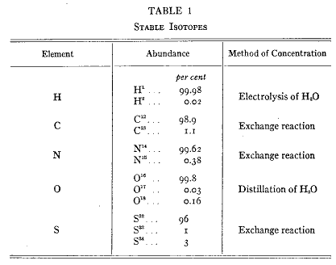
第１表
生物学者が有機化合物をアイソトープで標識できるようになったのはユーリーの研究(3)の結果であり彼は重水素を発見しただけでなくそれおよび炭素、窒素、酸素、硫黄のそれよりも少量しかない同位体を大規模に濃縮する方法を考案した。ユーリーがこれらの安定な自然に存在する同位体が手に入るようにしているあいだに核反応によって得られた放射性元素が生物学者に供給された。数年のあいだに殆どすべての元素の放射性同位元素が製造された。実際にあるものには放射性の性質を持つ幾つかの変種が存在する。
生体は安定なものにせよ放射性のものにせよ同じ元素の同位体を区別することができない。これらの手段が役にたつことを明らかにした最初の研究者はヘヴェシー(4)であった。彼は安定同位体も放射性同位体も入手できない早い時期の1923年に自然にある鉛の同位体であるラジウムＤを生体内における鉛の移動を研究した。彼のその後における無機イオン代謝の諸研究は生化学の歴史における古典であるがこの講義は有機分子の代謝に限っているので論ずることはしない。
ある研究において種々の同位体のうちでどれを選ぶかは現在では便宜上の問題である。安定同位体と放射性同位体はそれぞれ利点と欠点がある。放射性同位体の分析は一般により迅速であり便利であるがあるものは半減期が限られ他のものは量が少ないので短期間で終えることができる仕事には利用に限界がある。
同位体有機化合物を使う生物学実験では研究しようとする生理物質は１つまたはそれ以上の構成原子の同位体構成が異常なものを実験室で合成される。同位体化合物を動物に与えた後で臓器または排泄物から同位体構成が異常な他の化合物を単離したら後者の標識の量は広い意味で１つのものから他のものに化学変化をしたことを示すと考えることができるであろう。
現在のところこのような代謝の研究の多くは２種類の安定同位体である重水素（＝Ｄ）および N15 を使って行われる。重水素は重水の形で今では容易に入手できるが、N15（重窒素）はまだ入手が困難である。（訳者注：2H および 15N のように原子番号を左肩につけるのが現在の正式な表記法である。）炭素の種々な同位体を使う研究はまだ最初の段階ではあるがそれについて発表された少数の論文はその研究の基本的な価値を示している。
これからの講義には有機化合物の合成と単離および同位体の解析の方法について詳細な議論をふくんでいない。講義は同位体の生理学への応用および得られた結果の解釈に限ることにしよう。
生体は大きく複雑な分子たとえばタンパク質、脂肪、多糖類を広範に利用している。低分子の物質たとえばアミノ酸、単糖、脂肪酸の量は比較的に小さい。成長している動物が低分子を利用していることは事実であるが、大きな分子と小さな分子の相互作用は殆ど知られていない。このような相互作用の研究には体重が一定な動物すなわち成分の構成が相対的に同じであるような動物を使うことが必要である。ここで論ずる実験の大部分は栄養学的な平衡状態にある成熟動物で行っている。同位体の実験物質を与える量は一般的に少量に限ることにして基本食事の特性が変わらないようにした。
同位体化合物を使う最初の生物実験は脂肪について行った。この講義は生体脂肪が関わる化学過程についてのみ行う。
哺乳動物において大部分の脂肪は皮下、筋のあいだ、または内臓のまわりにに存在している。この脂肪はふつう蓄積脂肪とか貯蔵脂肪と呼ばれ一般に生物エネルギーの貯蔵であると考えられてきた。この概念によると脂肪の蓄積は代謝一般の外にあるもので必要なときだけに活性化される。
すべての動物はその種に特有な脂肪を作る傾向を持つ。他方、大量の異なる脂肪を餌にすることによって貯蔵脂肪の性質を思う通りに変えることができる。少量ではほとんど効果が無い。従って大量に与えるのでない限り餌の中の脂肪はすぐに燃えてしまうと考えられるであろう。
脂肪酸の移動と相互変化は同位体で追跡することができる。生化学者は有機化合物の代謝を追い求めるときに主として炭素の運命に興味を持ち他の原子にはあまり興味を持たない。このように狭い意味で解釈した「糖の脂肪への変化」という言葉は糖の炭素原子が脂肪酸の生物的合成に使われることを意味する。
重水素を脂肪酸に導入するのは重水に単純に溶かすことによって容易である（
 ）。カルボキシル基の水素原子はイオン化によって水のものとすぐに交換する。ヒドロキシル基、アミノ基、イミノ基、その他の水素が炭素以外の原子に結合している類似の基について同じことが成立する。しかし「不安定」な同位体を持つこのような物質は生物学的な追跡実験に使うことはできない。これらは摂取した後すぐに水性の物質すなわち体液の正常の水素に置き換えられることにより標識を失うからである。炭素に直接に結合した水素は一般に安定に結合していてそのような同位体化合物を沸騰したアルカリまたは酸の水溶液で処理しても除かれない。
）。カルボキシル基の水素原子はイオン化によって水のものとすぐに交換する。ヒドロキシル基、アミノ基、イミノ基、その他の水素が炭素以外の原子に結合している類似の基について同じことが成立する。しかし「不安定」な同位体を持つこのような物質は生物学的な追跡実験に使うことはできない。これらは摂取した後すぐに水性の物質すなわち体液の正常の水素に置き換えられることにより標識を失うからである。炭素に直接に結合した水素は一般に安定に結合していてそのような同位体化合物を沸騰したアルカリまたは酸の水溶液で処理しても除かれない。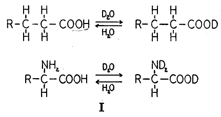
興味深い例外はカルボキシル基に近い炭素原子に結合した水素である。これはエノール化によって交換される。このような型の交換はステロールの領域で最初に観察された。通常のコプロスタノンを重水およびアルコールのアルカリ性混合液で沸騰させると、産物にはかなりの量の重水素を含んでいた。重水素は通常水におけるアルカリの作用によって完全に除去される（
 ）。例外的な場合には「準不安定」な重水素をふくむ化合物を代謝実験に使うことができる。エノール交換反応で作った重水素コプロスタノールをヒトに投与すると糞便から単離されたコプロスノールには安定に結合した重水素が多量に含まれていた。この発見はケト基の生物的還元が体内におけるエノール化(5)による交換反応より速い速度または少なくとも相応する速度で起きていることを示している。
）。例外的な場合には「準不安定」な重水素をふくむ化合物を代謝実験に使うことができる。エノール交換反応で作った重水素コプロスタノールをヒトに投与すると糞便から単離されたコプロスノールには安定に結合した重水素が多量に含まれていた。この発見はケト基の生物的還元が体内におけるエノール化(5)による交換反応より速い速度または少なくとも相応する速度で起きていることを示している。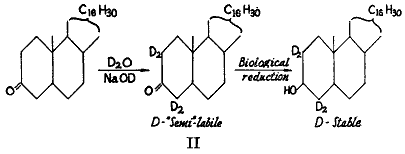
エノール性の準不安定性の特性はコレステノン（
 ）の二重結合を飽和させて作った重水素コプロスタノンの例に示される。この（）産物は常水中の沸騰アルカリ溶液で処理すると重水素原子のうちの１つだけが交換した。同位元素濃度は元の値の半分になったがそれ以上ではなかった。５の位置の重水素原子は交換しなかった。これに続く議論において「重水素化合物」は常に同位体が安定に結合していることを意味している。
）の二重結合を飽和させて作った重水素コプロスタノンの例に示される。この（）産物は常水中の沸騰アルカリ溶液で処理すると重水素原子のうちの１つだけが交換した。同位元素濃度は元の値の半分になったがそれ以上ではなかった。５の位置の重水素原子は交換しなかった。これに続く議論において「重水素化合物」は常に同位体が安定に結合していることを意味している。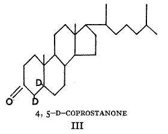
［校正者による追加］
エノール化による不安定性という原理の理論応用は、重水素酪酸を酸化する代謝過程のシェーマ（
 ）によって示される(6)。この過程で同位体は完全に取り除かれ、体液に含まれる水の水素原子と一緒になる。
）によって示される(6)。この過程で同位体は完全に取り除かれ、体液に含まれる水の水素原子と一緒になる。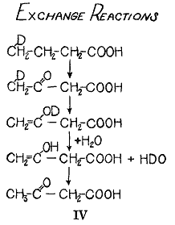
［校正者による追加ここまで］
食物脂肪の代謝についての最初の一連の実験は亜麻仁油から作った重水素脂肪を使って行われた(7)。これは部分的に重水素によって水素添加されたものであって重水素は炭素原子に結合していて、従って産物に安定に結合していた。正常成熟ラットを２％の標識脂肪を含む低脂肪食で飼育した。４日後に体脂肪に少なくとも44％の食餌の脂肪が蓄積していた。この所見は後になって典型的であることが示され、蓄積脂肪の全量は一定なので脂肪の置き換えの結果であったに違いない。蓄積した蓄積脂肪の量は分解した量に対応している。言い換えると動物が燃やした脂肪は単に吸収された食餌脂肪だけでなく殆ど同量の食餌脂肪と貯蔵脂肪からなる混合物であった。これらの同位体を用いた最初の実験は蓄積した脂肪は反応しない貯蔵物質ではなく絶えず代謝反応に関与していることを示した。
この研究は新しい実験手段が利用出来ることを確かめ、そしてその感度について一般的な考えを得るの目的で主として行われた。この実験の計画には多くの弱点があった。亜麻仁油の部分的な水素添加によって得られた脂肪は種々の脂肪酸からなるはっきりと定義されていないグリセリドであり、そのうちのあるものは生理的でない構成の可能性がある。したがって個々の成分のどれの代謝経路について直接の洞察を得ることは不可能であった。このような情報は１つの純粋な脂肪酸を投与することによってのみ得ることができる。
次の実験は正常ラットにおけるパルミチン酸の運命を示した。パルミチン酸は白金の存在のもとに重水中で熱し水素の22％が重水素で置き換えられ分子全体にほとんど等しく分布していた。慣用に従ってこの化合物は22原子百分率Ｄを含むと言う。これをカセインを含む基本食餌に加えた。亜麻仁油を使う最初の実験で動物は低脂肪食に保っていて、観察された脂肪蓄積の一部は動物が特定脂肪酸を要求するためとも考えることができた。ここで論ずる実験(8)でラットは６％のバターを与えられていた。これは複雑な食物脂肪であって動物が必要とするすべての脂肪酸を含んでいる。同位体パルミチン酸はエチルエステルとして食餌中に0.56％のレベルで加えられた。
同位体物質は吸収にさいしてバターの中にある同位体でないパルミチン酸に混ざったに違いない。バターの構成は詳しく知られているので(9)、動物に吸収されたパルミチン酸の同位体構成は5.7原子百分率Ｄと計算することができた。このようにしてラットは１種だけ同位元素追跡子で標識した大量の種々な脂肪酸を含む正常な餌で飼ったことになる。
８日飼育の後で体脂肪は摂取したうちの44パーセントに相当する追跡子の量を含んでいた。脂肪組織における重水素の存在は次の２つのうちのどちらかであろう。食餌の脂肪酸がそのものとして脂肪に蓄積して貯蔵脂肪に存在するパルミチン酸を置き換えたか、他の型の脂肪酸に変化してこれらの新しく作られた同位体化合物が次にそれらと同じ種類のものを置き換える、ことである。そのことを決定するためには種々の個々の脂肪酸を脂肪混合物から単離してそれらの同位体含量を測定することが必要であった。
第２表の値は摂取したパルミチン酸の重水素濃度を（5.7％ではなく）100原子パーセントとして計算したものである。したがって表の数値は食餌パルミチン酸から作られたそれぞれの貯蔵脂肪酸の最少の値をパーセントで示している。
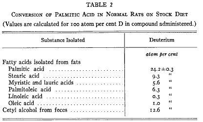
第２表
単離されたパルミチン酸は非常に高い同位体含量を持っていた。貯蔵脂肪にあるこの酸の24パーセント以上は新しく導入されたものであった。食物のパルミチン酸の一部は不飽和化（脱水素化）されてパルミトオレイン酸になりこのように新しく作られた化合物の一部は導入されてきたに違いない。さらにパルミチン酸は２炭素原子および４炭素原子が分解されてミリスチン酸およびラウリン酸になった。
興味深い知見はステアリン酸にかなりの量の同位体追跡子の存在したことであった。明らかにパルミチン酸の鎖は何らかの形式で他の化合物と縮合して２炭素原子が加わった。脂肪酸の鎖延長は急速に起きるものであって、その結果として動物体のステアリン酸のほとんど10パーセントが食物のパルミチン酸から作られた。同位体のオレイン酸はたぶん新しく作られた同位体ステアリン酸の不飽和化によって導入されたのであろう。
単離されたリノール酸は同位体を含まなかった。この物質は動物が作ることのできない必須食物成分であることを示したバーとバー(10)やその他(11)の観察からみてこの知見は意義深い。
これらの結果は総合すると多くの生物反応が同時に起きていることを示している。食事の脂肪酸の一部は直接に脂肪に導入され、他の大部分は種々の他の化合物に変化した後で蓄積された。この型の実験は１つの脂肪酸が他に変換することを明らかに示している。脂肪代謝を研究している大部分の研究者が脂肪酸の生物的な不飽和化を示唆してきたが直接の証明は存在しなかった。新しく出現した脂肪酸が炭水化物から合成されたか他の脂肪酸から誘導されたか示すことが不可能だったからであった。
この実験の興味深い特徴の１つは食餌にバターを含むことであった。バターにはかなりの量のステアリン酸、ミリスチン酸、ラウリン酸、オレイン酸、およびパルミトオレイン酸が含まれている。ラットはこれらのすべてをパルミチン酸から作りうるものであった。
この動物は１つの型の脂肪酸を他の型から作ることができるだけでなくその作られた脂肪酸が食餌に大量に存在しても作っている。この見掛け上に矛盾する結果は説明するのが困難であった。論理的な説明を提出する前に脂肪、タンパク質、その他の生体物質の多くの実験を行わなければならない。
脂肪酸の転換のすべては「生物学的に可逆的」であるように見える。ラットはパルミチン酸をステアリン酸に転換するだけでなく、ステアリン酸をパルミチン酸に分解し(12)、ステアリン酸のオレイン酸への不飽和化もまた逆行できるであろう。
この最後の転換を示す(13)には重水素オレイン酸の入手が必要である。リノール酸のようなもっと高度に不飽和な酸の部分的な水素添加によって得た産物は不均質であってオレイン酸に存在する場所以外に二重結合を持つ酸を含むのであろう。従って重水素ステアリン酸を重水素オレイン酸に転換することができる生きているマウスの能力を利用することにした。このようにして重水素ステアリン酸から生物学的に作った脂肪の不飽和酸分画は重水素を含んでいた。これをエチルエステルの形でその10倍の重さの乾いたパンと混ぜて２匹のマウスに10日のあいだ与えた。身体の脂肪から単離した飽和分画と不飽和分画は第３表に示すような同位体構成を持っていた。この実験の量的なデータを計算すると、飽和型の重水素脂肪酸の少なくとも３分の２は摂取した不飽和脂肪酸に由来するものであると考えられる。
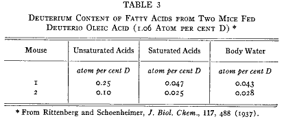
第３表
相互変化が絶えず行われるのは貯蔵脂肪が関係している唯一の化学過程ではない。脂肪が他の食物材料から合成できることは知られている。脂肪が食物から供給されているにしろそうでないにもせよこの脂肪合成が正常動物において常に起きていることが示される。
重水素は有機分子の代謝経路を追跡するのに使われるだけでなく多くの生合成反応が起きているかどうかおよびその速度を決定する一般的な方法に使われる。もしも動物に重水を注射すると重水はすぐに全身の液体に等しく分布し、血液、リンパ、尿、細胞液はすべて同じ重水素濃度を持つようになる(14)。そうなると動物体におけるすべての化学反応は重水中で起きることになる。水溶液中で起きる多くの化学過程には溶媒の水素が関与するので水素は反応産物に固定される。これらの反応の１つは還元反応である。糖から脂肪への合成の中間産物が何であろうとも、ヒドロキシメチレン基がメチレン基に還元されて、脂肪酸に水の水素が取り込まれなければならない。もしもこのような合成が重水中で起きるとしたら、新しく作られた脂肪酸は炭素についた安定結合性の重水素を持つことが特徴でなければならない。
この予測を確かめるために実験(15)を行った。パンを餌とした成熟マウスに重水を注射して次に体液の重水素含量が実験期間中に一定であるような同位体構成の飲み水を与えた。間隔を置いて動物を殺して動物の全脂肪酸の同位体構成を測定した。第１図の実線は重水素含量が一定になった水準を基準にして合成パーセントを示した結果である。合成反応は数日のあいだに半分の値になったことが見られるであろう。この過程の生物的可逆性は別の実験で示された。この実験では前もって重水素脂肪を与えておいたマウスに同じような餌を与え、飲水にはふつうの水を与えた。標識した脂肪を与えるのを止めると、その動物の全脂肪酸の同位体水準は合成の場合とほとんど同じ速度で降下した。この逆実験の結果は第１図に破線で示している。
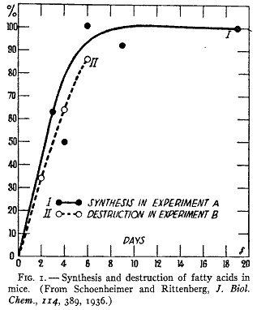
第１図
体液の重水素濃度を高めた実験では、水からの水素の固定される他の過程が生物内で起きることの除外できるときだけにこの解釈は正しい。よく論じられる可能性は炭素に結合した水素と水の水素との物理的交換である。これは試験管内では強烈な条件下だけに起きることが観察されているが、生きている動物で起きる可能性を除外することは常に容易ではない。
自然はこの問題を決定するために少なくとも１例だけで優れた機会を与えてくれている。我々は２種類の必須脂肪酸としてリノール酸とリノレン酸を知っている。ラットはこれらを合成できないので食餌に加えて与えなければならない。ラットに重水を注射し数日後に取り出した全貯蔵脂肪には重水素が含まれた。成分の脂肪酸を分劃した。ステアリン酸とパルミチン酸には高濃度の標識を含んでいた（第４表）が高度不飽和酸には全く含まれていなかった(16)。ある同じ動物で重水素がある種の脂肪酸には含まれるが他の種類には含まれないことは、この重水素は脂肪酸合成にさいして導入されたものであって既に存在していた脂肪酸に物理的交換で入ったのではないことを明らかに示している。

第４表
このように同位元素標識が脂肪酸に出現することは、どの酸が合成されるかだけでなく種々な型の脂肪酸について起きる反応がどのていど速いか決定する方法を提供する。２番目の実験(17)ではマウス体液の重水濃度を高めて間隔をおいて脂肪酸を得て飽和酸分画と不飽和酸分画を分離した。定常状態に達したときに飽和酸の重水素含量および合成速度は不飽和酸のものより高いことが第２図の曲線から見られるであろう。
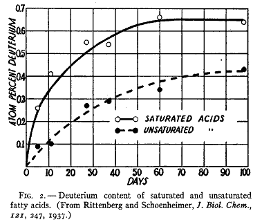
第２図
飽和脂肪酸の最終的な段階における同位体濃度は水の同位体濃度の約半分であった。脂肪酸生成のあいだに脂肪酸の水素原子の半分はこのように水から導入されていた。このことは酸が小さな単位の結合によって作られたことを示している。曲線はこの過程の速度を示している。曲線は指数の過程をとっていて半分の値によってその特性が判るであろう。
この生物合成が比較的に多数の小さな単位が縮合して起きていることを示しているもう１つの徴候は重水素原子の脂肪酸分子内における位置である。この分野はまだ体系的に研究されてはいないが１つの観察は標識の水素原子が脂肪酸の炭素鎖にかなり平等に分布している可能性を示している。オレイン酸を酸化するとそれぞれ９個の炭素原子をふくむペラルゴン酸とアゼライン酸になる（
 ）。体液中に重水を含む動物から取り出したオレイン酸にこの反応を適用すると２つの産物ともに反応に使ったオレイン酸とほぼ同じ原子濃度であった(15)。
）。体液中に重水を含む動物から取り出したオレイン酸にこの反応を適用すると２つの産物ともに反応に使ったオレイン酸とほぼ同じ原子濃度であった(15)。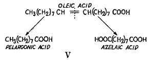
重水素脂肪酸の生物的な合成は体重も脂肪構成も一定な成熟マウスを使ったので同時に分解が起きないかぎり新しい合成が起きることはあり得ない。したがって曲線は分解の速度を示しており、同様に他の化合物から合成されたものによって体脂肪が置き換えられる速度でもある。
第３図に示したデータから量的な解釈をすぐに行うことはできないが、コレステロールの合成は約３週間で半分ほど進行し同位体濃度は最終的に体液の半分の定常値に達することを示している。この知見はマウスにおけるコレステロール合成は脂肪酸の場合と同じように多くの小さな分子の縮合によることを示唆している。
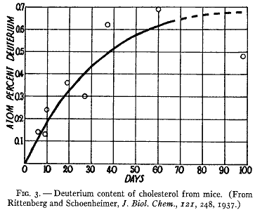
第３図
貯蔵脂肪の脂質はこのように絶えず種々の複雑な化学反応を受けている。すなわち合成、相互変換、および分解である。有機化合物が量も構成も最終的に変化していないこれらの生物的反応の総和は「分子再生」と呼ばれるものであろう。貯蔵されている脂肪およびその脂肪酸の成分はこのように絶えず急速に再生されている。
脂肪が貯蔵部位にあるときに広範に分子再生が起きるかどうかは疑わしい。このことは肝臓のような内臓で起きるのであろうと考えられる。ここで脂肪は高度に分散した状態である。これは脂肪が内臓からおよび内臓へ絶えず運ばれ、血漿の脂肪酸は再生の主な場所へおよび場所から運ばれる途中であろうことを意味している。貯蔵部位には大量の脂肪が存在し内臓には比較的に少量が存在する。従って再生は内臓でずっと速いはずである。このことの成立することが示されている（第４図）。肝臓では再生があまりにも速くてハーフタイムを正確に決定することはできなかった。しかし低脂肪食で飼った正常動物の肝臓に存在する半分以上の脂肪酸が１日以内に合成されたものであることを曲線の傾向が示している(18)。これにたいして貯蔵脂肪では約１週間かかっていた。
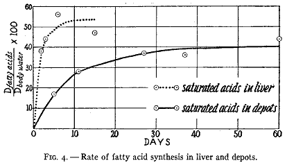
第４図
生体内の脂肪酸は遊離状態ではなくアルコールとエステル結合をしている。エチルエステルとして食物中に加えた重水素パルミチン酸は主として急速に貯蔵脂肪にグリセリドとして再出現する事実はエステル結合が絶えず分解し脂肪酸が少なくとも一時的に遊離されることを示している。ある脂肪分子から遊離型になった脂肪酸は他の分子からのものと混じるに違いない。
トリグリセリド（＝トリアシルグリセロール）は化学構造から脂質のうちで最も単純なものである。リン脂質はトリグリセリドの１つの脂肪酸がコリン−リン酸またはエタノール−リン酸で置き換えられたものと考えることができるであろう。これらの化合物もまた急速な分子再生を受けることが知られている。これらの複雑な構造は代謝過程を３種の異なる同位体を使って研究することができる。カヴァナフとレイパー(19)は重水素脂肪酸を使った。ヘヴェシー(20)、アートム(21)、シャイコフ(22)、シャルガフ(23)その他は放射性リン酸を使った。そしてステッテン(24)は重窒素で標識したコリンおよびエタノールアミンを使って実験を行った。これらの研究者たちすべてはそれぞれの断片がいろいろな速さでリン脂質に取り込まれることを観察した。これらはまた絶えず断片に分解して他のものからの同じ化合物と混ざるに違いない。食物中の物質の取り込みは合成過程において行われる。
貯蔵脂肪中の脂肪酸は脂肪またはリン脂質の形で内臓へおよび内臓から運ばれるとみなされる。エステル結合は内臓で開裂して脂肪酸は一時的に遊離する。脂肪が吸収されると食物起源の脂肪酸は貯蔵脂肪からのものと混ざりこのことによって起源を区別できない混合物を形成する。遊離した脂肪酸の一部は他のものに変化し、そのあいだに他の物質を起源とする小分子の結合することによって新しいものが生成する。脂肪酸のプールのあるものは分解し、そしてあるものはエステル結合に再び入り脂肪を再生して運ばれて貯蔵脂肪に戻る。すべてこれらの複雑な反応はバランスが取られていて、貯蔵部位、血液、内臓の中の脂肪混合物の全量および構造は一定である。
脂肪についての同位体研究の結果を要約するとしたら、正常動物の脂肪は質的および量的に一定であるにもかかわらず急速に流れている（フラックス）の状態にあると結論せざるを得ない。主として量または比較的な組成変化の測定に限っていた古典的な代謝研究方法がこの動的状態を見いだせなかったことはすぐに理解できる。
タンパク質は自然にある最も複雑な有機化合物であり分子量は3,5000から数百万である。多くの小さな単位のアミノ酸のグループがペプチド結合によって連結してこれらの大きな分子を作成している。ペプチド結合でα−アミノ基は隣り合っているアミノ酸の炭素原子と直接に結合している。これらの窒素原子が他の窒素原子で置き換えられるにはペプチド結合の開裂が必然的に起きることになる。このような置き換えは生きている動物や植物で急速に起きることが示されるであろう。
動物は成長するあいだにタンパク質を作り飢餓にさいして失う。栄養平衡にある成熟動物においてタンパク質の全量は一定であり多分それらの構成も一定であろう。そのような動物は食物中にある窒素に等量の窒素を排泄する。これらの動物は窒素平衡の状態にある。
同位体、とくに窒素および水素の同位体は、食物アミノ酸の運命および生体内のタンパク質が受ける化学過程を研究するのに協力な手段である。ユーリー博士が親切に提供してくださった重窒素（N15）によってタンパク質代謝研究の新しい技術が可能になった。この実験ではしばしば同位体アミノ酸の飼育が行われる。この窒素同位体はアンモニア塩の形で作られるのでアミノ酸はアンモニアを出発物質として合成しなければならなかった。合成過程は重窒素を定量的に回復できるように工夫しなければならなかった。第５表は合成した同位元素窒素化合物のリストである。これらの大部分についてすでに生物学的な試験を行った。

第５表
アミノ酸は２つの違う部分、すなわちアミノ基と炭素の鎖、からなっていると考えることができよう。これらはそれぞれ別に独立の異なる経路を通ると考えられる。代謝研究ではそれぞれの部分に独立の追跡子を使うのがしばしば望ましいし時には必要である。たとえばアミノ基のために N15、炭素鎖のために重水素である。第５表にはそのような二重に標識したアミノ酸が幾つか挙げられていて重水素は側鎖の炭素原子に結合している。
グリシン以外のすべてのアミノ酸は不斉炭素原子を持っていて、自然の種類には光学異性体のうちの１つだけが存在する。我々の実験は自然状態になるべく近づけることを計画していたので合成アミノ酸を分割して自然の型のみを餌に加えた。
もしも体タンパク質が静的な条件にあるのだったら排泄された窒素は主として食物構成物の分解したものであるべきである。しかしこの考えは正しくなさそうであった。
ここで少量の同位体アミノ酸誘導体をラットの基本食餌に加えて自然アミノ酸の代謝経路を研究した２つの実験を示すことにしよう。すべての実験でラットは窒素平衡にあり体重は一定であった。食餌には16％のカゼインを含んでいた。これは維持に充分以上のものであることが知られていた。
最初の群には l(-)−ロイシン(25)、次の群にはグリシン(26)を３日のあいだ25mg（全摂取量の約７％）の窒素にあたるものを与えた。ロイシンは二重に標識した（
 ）。排泄物を集め、期間が終わった後で臓器をトリクロロ酢酸で抽出して低分子の窒素化合物を取り除いた。すべての分画から窒素のサンプルを取ってそれらの同位体含量を測定した。第６表には動物の種々な部分にある標識された窒素のパーセントを与えている。材料は充分によく吸収されていた。糞中に出現したのは重窒素の３％以下だった。
）。排泄物を集め、期間が終わった後で臓器をトリクロロ酢酸で抽出して低分子の窒素化合物を取り除いた。すべての分画から窒素のサンプルを取ってそれらの同位体含量を測定した。第６表には動物の種々な部分にある標識された窒素のパーセントを与えている。材料は充分によく吸収されていた。糞中に出現したのは重窒素の３％以下だった。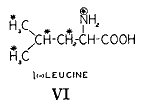
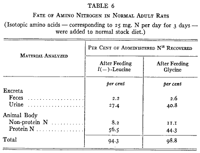
第６表
独立の内因性および外因性代謝の概念によると食餌窒素の大部分は直接に尿中に現れるはずである。ロイシンでは３分の１以下、グリシンでは半分以下が排泄された。残りの部分は体内に残った。残った同位体窒素のうちで非タンパク質分画はほんの少量を占めるだけである。従ってタンパク質は非常に速い化学反応に関連していて加えたアミノ酸の窒素の少なくとも半分以上を固定したことになる。ラットの体重は一定であるので問題となっている経過はよく釣り合っていてタンパク質の量は最終的に変化していない。
第６表に示す摂取した窒素の分布はこれまで研究してきたすべてのアミノ酸に典型的なものであった。ロイシン、グリシン、グルタミン酸、アスパラギン酸(66)、チロシン(27)、リシン(28)はすべて同じように挙動し、この結果が動物の食物窒素の一般的な経路であると結論することができる。
臓器が違うと食物窒素の固定は同じようではない（第７表）。種々の臓器のタンパク質窒素の同位体濃度は食物タンパク質窒素の受け入れに関してのそれぞれのタンパク質の比較的な活性を示している。内臓、血漿、腸管のタンパク質は最も活性が高い。筋肉のタンパク質の活性はもっと低いが筋タンパク質は動物体内で大部分を占めるので低濃度であるのに同位体の高い絶対量を占めている。実際のところ動物に蓄積している窒素の３分の２は筋肉からであり３分の１が他の内臓全体から回収された。予期されるように皮膚のタンパク質はもっとも活性が低い。
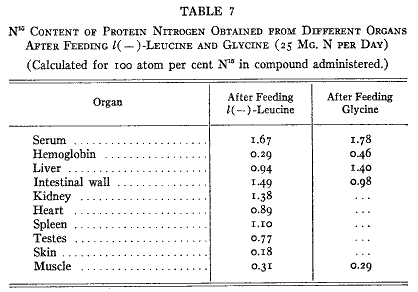
第７表
タンパク質に同位体窒素のあることは２つの過程の次のうちの１つによるだろう。食物のアミノ酸はタンパク質中の同じ種類のアミノ酸を置き換える――たとえばロイシンがロイシンを置き換える――のか、ある種のアミノ酸の窒素が他のアミノ酸に使われてこれはタンパク質の同じアミノ酸を置き換える。
このような反応を研究するためには純粋なアミノ酸サンプルを単離してその同位体含量を測定しなければならない。ラットの組織タンパク質のあるものを加水分解してアミノ酸の純粋なサンプルを手に入れる（第８表）。ロイシンを与えた動物体からえたロイシンのサンプルは非常に高い標識窒素を含んでいて、食物のロイシンが実際にタンパク質のロイシンを置き換えたことを示した。さらに単離したロイシンは重水素も含んでいるのでアミノ基だけでなく分子全体の導入されたことが示された。グリシンを使った結果も同様であった。グリシンがタンパク質内のグリシンを置き換えた。
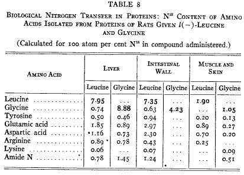
第８表
しかしロイシンとグリシンだけが臓器タンパク質から単離したアミノ酸ではなかった。ロイシンを与えると単離したグリシンは追跡子を含みグリシンを与えると逆のことが起きた。ロイシンはグリシンに窒素を与えグリシンは同様にロイシンに与えた。単離した殆どすべてのアミノ酸は重窒素を含んだ。結果（第８表）はアミノ酸が絶えず窒素原子を交換していることを示している。
他のアミノ酸から窒素を受け取る活性が最も強いアミノ酸は２種類のジカルボン酸であるグルタミン酸とアスパラギン酸である。我々のすべての実験においてこれらの２つの化合物は窒素を受け取るもののうちで最も同位体含量が高かった。これら２つのうちでグルタミン酸はあるていど速く反応した。
研究した多くのアミノ酸のうちでリシンは例外であった。標識した窒素を含むことはなかった。これらの過程との関係は後で述べることにしよう。
組織タンパク質アミノ酸の食物からの同じアミノ酸による置き換えおよび窒素の移動はペプチド結合の急速な開裂および再形成をふくまなければならない。窒素の取り込みは急速な反応なのでペプチド結合が開いたり閉じたりするのもまた速い反応である。ペプチド結合はタンパク質の重要な部分とみなすべきなので、正常動物のタンパク質においてペプチド結合は急速に絶えず開いたり閉じたりしていると結論することができよう。実験はこの開裂が完全なものか部分的なものかを直接に示してはいない。しかし、酵素によってすべてのペプチド結合を同時に攻撃することを想定するのは困難である。
アミノ酸が食物中に充分に供給されていてもアミノ酸の合成は起きる。たとえばグルタミン酸は大量に作られていたが食餌カセインには20%も含まれていてラットに栄養学的なグルタミン酸欠乏は無かった。アミノ酸合成は最初の講義で論じたように明らかな必要性が無くても進行する。
アミノ酸分解における重要な段階は脱アミノによって対応するケト酸（
 ）になることである。アミノ酸はまず酵素アミノ酸オキシダーゼによって脱水素反応を受けて相応するイミノ酸になる。これは自然に加水分解されてケト酸とアンモニアになり、アンモニアは肝臓において尿素になる。これらの過程は可逆反応であってケト酸とアンモニアはイミノ酸になり水素が添加されるとアミノ酸になる。ケト酸とアンモニアの混合物を実験室で還元してアミノ酸を作る反応はクノープとエステルリン(29)によって実証され我々は多くの同位体アミノ酸を合成するのに利用した。この反応式によると脱水素反応によって１つのアミノ酸から放出されたアンモニアは他のケト酸と反応して新しいアミノ酸が作られる。最近フォン・オイラーと共同研究者たち(30)はα−ケトグルタール酸とアンモニアからグルタミン酸を合成する特異的な酵素について記載した。
）になることである。アミノ酸はまず酵素アミノ酸オキシダーゼによって脱水素反応を受けて相応するイミノ酸になる。これは自然に加水分解されてケト酸とアンモニアになり、アンモニアは肝臓において尿素になる。これらの過程は可逆反応であってケト酸とアンモニアはイミノ酸になり水素が添加されるとアミノ酸になる。ケト酸とアンモニアの混合物を実験室で還元してアミノ酸を作る反応はクノープとエステルリン(29)によって実証され我々は多くの同位体アミノ酸を合成するのに利用した。この反応式によると脱水素反応によって１つのアミノ酸から放出されたアンモニアは他のケト酸と反応して新しいアミノ酸が作られる。最近フォン・オイラーと共同研究者たち(30)はα−ケトグルタール酸とアンモニアからグルタミン酸を合成する特異的な酵素について記載した。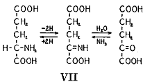
アンモニアは１つのアミノ酸から他のアミノ酸にアミノ基を移す中間産物であるという仮説は実験的に確かめられた。もしも同位体アンモニアをラットに与えるとこれは仮定的なアンモニアと混ざって新しいアミノ酸の合成において同位体窒素がアミノ酸に入ることになる。
ラットは前に記載したのと同じように処置された。ただ違うのは同位体アミノ酸を３日のあいだ与える代わりに同位体のクエン酸アンモニウムを９日のあいだ餌に加えたことであった。これらの動物のタンパク質から単離したアミノ酸（グリシン、アスパラギン酸、グルタミン酸）には実際に同位体窒素の標識が入っていた（第９表）。グルタミン酸は上記３つのうちで同位体濃度がもっとも高かった。予期されたように餌の中のアンモニアから９日のあいだで導入された窒素は３日間で食物中のアミノ酸から導入されたものより少し多いだけであった。大部分は直接に尿素に変換した。
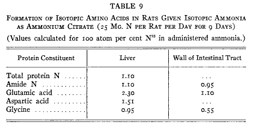
第９表
この結果はアンモニアが中間段階であることを強く示唆しているが他のメカニズムも除外することはできない。アンモニアが中間段階ではなくて窒素がアミノ酸の間で移る反応が最近にヘルプストとエンジェル(31)によって記載されている。ケト酸はアンモニアと縮合してイミノ酸になるだけでなくアミノ酸とも縮合してイミノ酸誘導体を生成する。これらの化合物では二重結合の移動が起きて加水分解によって２分子のアミノ酸ができる。これらのうちの１つは新しいアミノ酸であって用いたケト酸の側鎖を含んでいる。
ブラウンシュテンとクリツマン(32)は今ではアミノ基転移（
 ）と呼ばれているこの一般的な過程が起きている事実を示し筋にアミノ基転移酵素の存在することを示した。この酵素は高度に特異的であって反応する化合物の１組のうちの１つはグルタミン酸またはアスパラギン酸であるか、または対応するケトン誘導体でなければならない。
）と呼ばれているこの一般的な過程が起きている事実を示し筋にアミノ基転移酵素の存在することを示した。この酵素は高度に特異的であって反応する化合物の１組のうちの１つはグルタミン酸またはアスパラギン酸であるか、または対応するケトン誘導体でなければならない。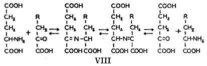
フォン・オイラーたちおよびブラウンシュテンたちの２つの酵素反応メカニズムの双方でジカルボン酸が関与することは我々の同位体による結果にとって魅力ある説明を与えた。アミノ酸の脱アミノ化によって遊離したアンモニアはフォン・オイラーの酵素によってグルタミン酸に組み入れられ、後者の窒素は他のアミノ酸へのアミノ基転移によって移された。グルタミン酸の同位元素含量が高いことはグルタミン酸が代謝において中央的な地位を占めていることを示唆し、この考えを支援するものであり得る1)。
同位体アンモニアはタンパク質およびアミノ酸を全く欠いた食物で飼った動物の体タンパク質の活性を研究するのに使うことができる。アミノ酸およびタンパク質を摂取していた動物では食物のアミノ酸が体タンパク質に届く前に窒素の置き換えが起きていた可能性がある。アミノ酸またはタンパク質を摂取しないでアミノ基の転移が見られたら体タンパク質の強力な活性を示すものであろう。
未成熟なラットをコーンスターチ、ラード、同位体クエン酸アンモニウムで飼った(34)。このような不自然な食餌で動物はもちろん体重を急速に失った。しかし急速な体タンパク質の消失にもかかわらず新しいアミノ酸がタンパク質に導入された（第10表）。前の実験と同じようにリシンは同位体を含まなかった。
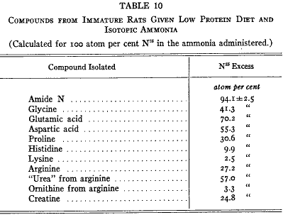
第10表
同位体アンモニアを使った結果はタンパク質全量が増えていないのでタンパク質生成を意味しない。アンモニアまたは尿素をタンパク質の代用にする多くの試みがなされてきた(35)。アンモニアがこの機能を果たさない多くの理由があり、その理由は後で明らかになるであろう。タンパク質の合成には窒素の他にある種の炭素鎖が必要でありそのうちには動物の作れないものがある。この度の実験はアンモニアが窒素転移にだけ使えることを示している。
これまで論じてきた実験は組織タンパク質に関するものであってこれらのタンパク質ははっきりしない混合物である。同位体をつかった結果は組織に一定量の「不必要な貯蔵タンパク質」が存在するためであるという議論がなされてきている(36)。もっとも説得力ある事実によってラック(37)はこれらの存在に強く反対している。
特異的と考えることのできるタンパク質を実験動物から単離することによってこの問題を検討することができた。このょうな計画は同位元素標識が充分に入手できない難点があったので免疫学的手段を利用しなければならなかった。ハイデルバーガー博士と協同して免疫した動物の特異抗体の化学反応性について実験を行った(66)。ウサギに肺炎球菌（
）型を繰り返して注射して抗体濃度を充分に高めた。注射を終わらせると抗体濃度は低下し、低下しているあいだに少量の同位体グリシンを3日のあいだ食餌に加えた。血漿を毎日とって、窒素を含まない（）型特異的な多糖類によって抗体を沈殿させて(38)、同位体濃度を測定した。結果は第５図の点線で示した。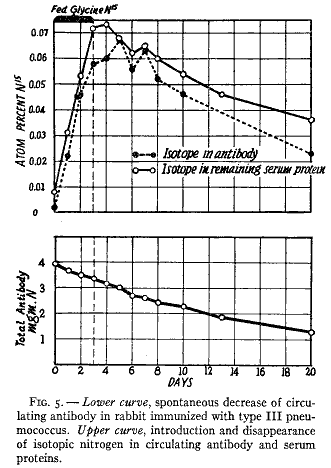
第５図
同位体アミノ酸を加えると抗体中の標識窒素の濃度はすぐに高くなるが、グリシンの食餌への添加を止めるとしだいに低下した。第５図の上部の実線は他の血清タンパク質の同位体濃度である。この殆ど一致している２つの曲線は特異抗体が平均的な血清タンパク質と同じように食物窒素を受け入れていることを示している。
このように化学反射は抗体タンパク質の単位に起きて第１の時期には食物窒素を取り込み第２の時期には取り除かれる。同位体タンパク質の生成は血清の抗体価が絶えず低下している時期に起きた。問題になっている過程は抗体タンパク質の特異的な構造を変えていなかった。
結果は組織の全てのタンパク質で観察されたものに似ている。他のウサギを免疫して３日のあいだ同位体グリシンを与えた。全抗体および他の血清タンパク質を加水分解して何種類かのアミノ酸を単離した。抗体および他の血漿タンパク質は組織タンパク質と同じ型の急速な再生を受けていることが第11表から見られる。抗体のグリシンの同位体含量が高いことは抗体のグリシンが食物グリシンで置き換えられたことを示している。他のアミノ酸に同位体のあるのは窒素転移を示している。
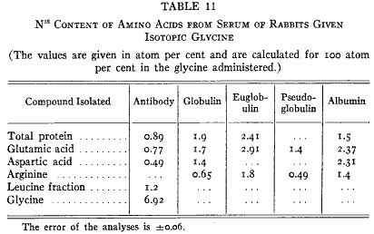
第11表
血清タンパク質が急速に分子再生を行っている知見はホウィップルおよび共同研究者の理論(39)と一致している。彼らは血漿交換法（プラズマフェレシス）によって失われた血漿タンパク質が急速に補給されるのは血液タンパク質と組織タンパク質が動的平衡状態であることによると考えている。これらの研究者たちは知見をまとめて次のように言った「この事実はある条件で（たぶん多かれ少なかれ絶えずに）体タンパク質と血漿タンパク質のあいだに『ギヴアンドテイク』があることを確信させる。」血液と臓器の動的状態についての概念は最後の講義で充分に論ずるようにすべての我々の結果によって支持される。
生体内における再生の速度はかなり異なるかも知れないがどのタンパク質もたとえ一時的にもせよ静的な条件にあると考えることはできないだろう。純粋に構造機能を果たしていると考えられるウサギの腱ですら遅いが有意の活性を示した。
栄養学的にアミノ酸は非必須および必須のものに分類される。最近ローズ(40)は必須な食物成分とは、ふつうに得られる物質から正常の成長に相応する速さで動物体が合成できないものと定義している。この尊敬すべき定義は成長における栄養要求に関するものであって成長した動物の代謝作用に関するものではない。
知られている10種のアミノ酸のうちでロイシン、ヒスチジン、リシン、フェニルアラニン、メチオニン、アルギニン、の６種は同位体を使って研究した。ロイシンは絶えずアミノ窒素を他の化合物に与えこれのケト酸は他の化合物からアミノ窒素を受け取っている。同様に同位体チロシンを食べさせると組織タンパク質から単離したヒスチジンは標識した窒素が含まれた。ヒスチジンは３原子の窒素を含み２個はイミダゾール環にあり１個は側鎖のαにある。
分子内における同位体の位置を決定するためにヒスチジンは亜硝酸によってイミダゾール乳酸に変化させた。これは普通の窒素だけを含むので(41)、すべての同位体窒素はα−アミノ基（
 ）にあることは間違いない。
）にあることは間違いない。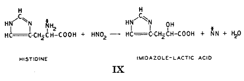
ヒスチジンを含むがリシンは含まない必須アミノ酸のあるものはそれらの脱アミノ産物であるα−ヒドロキシまたはα−ケト酸によってラットの餌で置き換えることができる(42)。ヒスチジンが必要なときにラットはイミダゾール乳酸のヒドロキシ基をアミノ基で置き換えることによって生成させることができる。この実験は他のすべての実験と同じように充分に成長したラットを使い餌におけるヒスチジン供給は充分だったので、出発物質が得られるならば動物の行ないうる化学反応は絶えず行われるという論点をこの結果はさらに支持するものと言えよう。
絶えず脱アミノが行われるロイシンやヒスチジンと同じようにリシンはその窒素を他のアミノ酸生成に与えることができる。しかしこの逆過程はリシンでは起きず決して再生されない。
窒素転移の絶えざる過程は二重に標識されたアミノ酸を使って直接に正確に測定することができる。炭素に結合した重水素と 15N アミノ基を持つロイシンとリシン（
 ）を合成して光学異性体を分割して自然の構造を持った異性体をいつも与えているカゼインを含む基本食餌に加えた。同位体化合物は吸収および蓄積にさいしてカゼインおよび組織にある通常の非同位体 l(-)−ロイシンまたは l(-)−リシンと混ざる。身体から単離したロイシンとリシンのサンプルは標識および通常のロイシンとリシンの分けることができない混合物である。もしも生物的な混合だけが起きたのであれば両方の同位体標識は低下するがその比率は違わないであろう。しかしもしもα−アミノ窒素が取り除かれ他の物質からの正常の窒素によって置換されると、Ｄ：15N の比率は単離された物質で高くなければならない。
）を合成して光学異性体を分割して自然の構造を持った異性体をいつも与えているカゼインを含む基本食餌に加えた。同位体化合物は吸収および蓄積にさいしてカゼインおよび組織にある通常の非同位体 l(-)−ロイシンまたは l(-)−リシンと混ざる。身体から単離したロイシンとリシンのサンプルは標識および通常のロイシンとリシンの分けることができない混合物である。もしも生物的な混合だけが起きたのであれば両方の同位体標識は低下するがその比率は違わないであろう。しかしもしもα−アミノ窒素が取り除かれ他の物質からの正常の窒素によって置換されると、Ｄ：15N の比率は単離された物質で高くなければならない。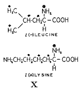
第12表は結果を示す。元のロイシン窒素の約３分の２は他の窒素によって置き換えられるが蓄積されたリシンは元来のα−アミノ窒素のすべてを残していた(28)。ロイシンはこのように可逆的な窒素転移に関与していた。リシンは１度脱アミノされると再合成されなかった。この結果は必須アミノ酸は正常動物において非必須アミノ酸と根本的に同じであることを示している。タンパク質内のペプチド結合は絶えず壊れ遊離したアミノ酸は常に外因性の同じアミノ酸によって置き換えられる。
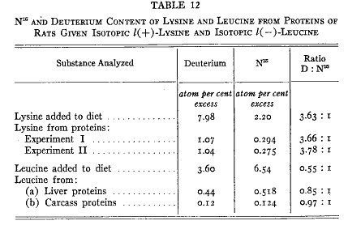
第12表
必須アミノ酸は可逆的な窒素転移に関する限り２種類になる。１つはロイシンとヒスチジンに代表されて絶えず窒素を与えたり受け取ったりする。２種類の代謝的に独立な化学の基がある。１つは炭素鎖であって必須なものである。他のものすなわちアミノ基は他の生理的な物質から得ることができる。ロイシンとヒスチジンが必須なのは動物がその特定な炭素鎖を作ることができないからである。
他の種類は現在のところリシンだけが知られている。このアミノ酸は窒素転移に関して可逆的でなく１つの必須な化学単位であってこのような形で動物に与えなければならない。α−Ｎ−メチルまたはα−ヒドロキシ誘導体としても d(-)−リシンとしても代わりにはならない。
正常の体内におけるタンパク質の化学反応性はアミノ基に限られていない。炭素鎖は絶えず変化の流れを受けている。炭素鎖に重水素があるように合成されたオルニチンの代謝における運命を調べる実験を行った(43)。これをマウスの基本食餌に加えて体タンパク質からいろいろなアミノ酸を単離した。アルギニンはかなりの量の重水素を含んでいた。従ってアルギニンはオルニチンからマウスによって調製し、新しく作ったこのアミノ酸はペプチド結合を置き換えた。プロリンもまた重水素を含むので(44)、オルニチンは環を作るに違いない。カッコ内の化合物は中間生成物と思われるものである（
 ）。新しく作られたプロリンはアルギニンと同じようにタンパク質内に入る。それに加えてグルタミン酸は多くはないが有意の重水素を含む。この存在は末端にあるアミノメチル基が直接またはプロリンやピロリドン・カルボン酸を経て酸化的に分解したことを指摘している。
）。新しく作られたプロリンはアルギニンと同じようにタンパク質内に入る。それに加えてグルタミン酸は多くはないが有意の重水素を含む。この存在は末端にあるアミノメチル基が直接またはプロリンやピロリドン・カルボン酸を経て酸化的に分解したことを指摘している。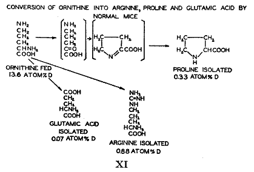
このような変化の他の例は必須アミノ酸であるフェニルアラニンについても研究され(45)、非必須アミノ酸であるチロシンについても研究された。チロシンを必要とする動物はフェニルアラニンから作るであろうことがローズ(40)によって論じられた。
重水素は重水素温硫酸の作用によってフェニルアラニンに導入された。ベンゼン環のすべての水素原子は重水素を含んでいたが分子の他の部分には殆ど入らなかった。この同位体アミノ酸を与えられていた動物のタンパク質から単離したチロシンは高濃度の重水素を含んでいて肝臓タンパク質内に存在するチロシンの少なくとも30パーセントが食物のフェニルアラニンに由来することが示された（
 ）。この結果はヒドロキシ基のオルト位にある水素（または重水素）原子は酸加水分解の条件で不安定になるという以前の観察(46)を基礎として計算されたものであった。
）。この結果はヒドロキシ基のオルト位にある水素（または重水素）原子は酸加水分解の条件で不安定になるという以前の観察(46)を基礎として計算されたものであった。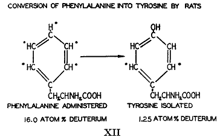
すべてこれらの実験において新しく生成したアミノ酸は食餌のカゼインにすでに存在していた。さらに食餌中のアミノ酸の影響を調べるためにラットに同位体大量のフェニルアラニンに加えて正常な非同位体チロシンを与えてラットが疑いもなくチロシンを過剰に与えられている条件で他の実験を行った。この結果は、タンパク質成分について行う生物のすべての反応が、タンパク質の全量および成分が一定の場合であっても、絶えず行われているという一般化の、もう１つの例である。
正常動物のタンパク質においてアミノ酸が反応する速度はグルタミン酸の挙動(66)に示される。グルタミン酸はもっとも反応性のあるだけでなく動物タンパク質にもっとも多いアミノ酸である。食物カゼインからグルタミン酸が大量に絶えず流れこんでいるにもかかわらずこの化合物の代謝反応はあまりにも速いので同位体の形で餌に与えた後で追跡するすべての試みは失敗した。同位体窒素の置き換えが組織タンパク質へのグルタミン酸の導入前か後か事実が得られていないが、動物のすべてのグルタミン酸はタンパク質内に存在するものも含めて非常に速く再生されていることは明らかである。同位体の dl−チロシンと l−ロイシンを与えた実験（第13表）で肝臓タンパク質のグルタミン酸窒素の同位体レベルは尿の尿素のものとほとんど同じように高かった。同位体グリシンを与えると対応する比率は低いがそれでも驚くべく高かった。尿素の窒素はもちろん単に１つのアミノ酸からだけではなく外因性および内因性由来の生物的に反応するすべてのアミノ酸の代表的なサンプルとみなすことができよう。
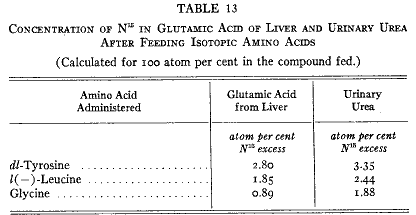
第13表
同様にアミノ転移によって１つのアミノ酸に導入された窒素もまたすべてのアミノ酸に由来するものである。概算ではあるが我々の実験条件においていずれのアミノ酸にもせよ導入された窒素混合物は尿素生成に使われたものとほぼ同じ同位体濃度と仮定することができるであろう。従ってグルタミン酸にせよ他のアミノ酸にせよ投与したアミノ酸を除いて、尿の尿素よりも同位体濃度が高いことは期待できない。もしも単離したアミノ酸の同位体濃度と尿度の濃度が等しかったとしたら、アミノ酸の窒素が代謝プールの窒素によって完全に置き換えられたとみなすであろう。第13表の値は短期間（３日）の実験で非常に大きな置き換えの起きたことを示している。
これらの反応の速さを直接に測定するのに重水を行う方法がある。可逆的な脱アミノ反応にはα−アミノ窒素の置き換えだけでなくα−炭素原子に直接に結合した水素原子の置き換えも必要である。前に述べた模式図（
）によると生物的脱アミノにはまず脱水素が必要であり、逆反応のアミノ化には水素添加が関係している（）。もしもこの可逆反応が重水内で行われると溶媒の重水素が反応に入り最終的にアミノ酸に固定される。もしもシステム内のグルタミン酸がこの可逆変化を受けると分子の混合物のすべてのα−水素原子は水と同じ同位体濃度を持たなければならない。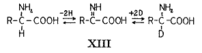
飢餓のラットに重水を注射した。24時間後にタンパク質から単離したアミノ酸はリシンを除いてすべて重水素を含んでいた。グルタミン酸は水素置き換えがもっとも高かった(66)。肝臓から取り出したサンプルの同位体含量は10日および60日の長さの実験で得られたものの80%に相当するものであった(47)。このことはこの臓器のグルタミン酸の少なくとも80パーセントがこの可逆的な脱水素−水素添加反応を24時間のあいだ受けていたことを示唆している。
ここで報告した結果はタンパク質分子のあるものが正常動物で反応する速度についてぼんやりした考えを与えてくれる。すべてのタンパク質分子の反応を研究する試みは希望が持てないであろう。あまりにも多くの結合と非常に異なる速度で反応する代謝的に活性のある基が存在している。同位体というこのように便利な手段があっても１度には幾つかの基以上を研究することはできないであろう。
1)しかしこの解釈は完全に満足なものではない。アミノ基転移は元来ブラウンシュテンが考えたのより制限のあることをコーエン(33)が示した。グルタミン酸、アスパラギン酸およびアラニン以外はこの反応に関わりのないことが示された。我々のラットのタンパク質の他のアミノ酸に同位元素のあることはフォン・オイラーおよびブラウンシュテンの酵素以外によるのかも知れない。他のメカニズムを研究しなければならない。
前の２回の講義において生体成分がいかに広範囲に再生されているかを示す努力をした。再生過程を排泄物の生成と関連付けようとするのは興味深いことである。
窒素代謝の最終産物の大部分は尿中に排泄される。尿の量的および質的な構成は科学的医学の始まりから研究の対象になっていた。尿の成分およびその生成についての詳細な知識は生きている細胞の化学作用に重要な洞察を与えるであろうと常に希望されてきた。
尿中の主な窒素成分は尿素、クレアチニン、尿酸である。これらの物質の生成は窒素をふくむ組織成分が受ける過程に関連している。窒素平衡状態にある正常動物が排泄する窒素は食物タンパク質と体内タンパク質の一定で急速な化学相互作用に起因するプールの標品であることが指摘されてきている。この排泄された化合物の生成はタンパク質が受ける化学過程と密接に関連し、これらの大きな分子に存在しているある特定の基の反応に関係することが見出されている。
ボルマンその他の研究(48)によって尿素生成が肝臓で起きることを我々は知っている。長いあいだ尿素は二酸化炭素とアンモニアから炭酸アンモニウムの直接の脱水素によって作られるとみなされていたが、1932年にクレプスとヘンゼライト(49)は組織スライスの実験によって過程はもっと複雑なことを示した。尿素生成はアミノ酸のオルニチンまたはシトルリンによって加速されることが見つかった。これらの著者はオルニチンが二酸化炭素および１モルのアンモニアと縮合してシトルリンになり、これは２番目のアンモニアと反応してアルギニンになるという説明を提供した。哺乳類の肝臓に存在する酵素アルギナーゼはアルギニンに作用して尿素とオルニチンになる。尿素は腎臓に運ばれて排泄され、オルニチンは再び尿素合成の連続的なサイクルに使われる。
この理論は同位体の仕事によって大きな支持を得た。尿素の炭素が直接に二酸化炭素から供給されることは放射性二酸化炭素を使ったエヴァンスとスローティン(50)および安定同位元素 13C を使ったリッテンバーグとウェルシュ(51)の組織スライスを使う実験によって示された。
生きている動物を使った我々の実験で同位体アンモニアまたは同位体アミノ酸を摂取すると同位体の尿素を排泄する。これらの動物から単離したアルギニンもまた窒素同位体を含んでいる。アルギニンは４個の窒素原子を含んでいるので同位体の存在位置を知るためにこれの分解が必要であった（
）。これは酵素アルギナーゼを使って容易に行うことができた。この酵素は前に述べたように尿素サイクルに関連すると想定されていた。このようにして得られた尿素はアルギニンのアミジン基の窒素を代表するものである。尿素は同位体を含んでいるので、アルギニンの元来のアミジン基は他の物質からの窒素を含むアミジン基で置き換えられたに違いない。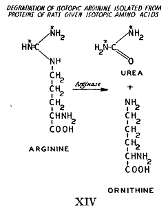
単離したアルギニン試料が尿素生成に関わっていたことはかなり確かである。尿素サイクルはアルギナーゼが中間において作用していることを想定している。アルギナーゼは遊離アルギニンにはすぐに作用するがタンパク質に結合したアルギニンには非常にゆっくりかまたは全く作用しない。従ってタンパク質から遊離したアルギニンは他のアミノ酸と同じように絶えず遊離しタンパク質に再導入されると結論しなければならない。遊離した状態でアルギニンはアルギナーゼによって分解されてオルニチンになり、これは次にアルギニンの再生に利用された。
オルニチンが絶えずアルギニンに変換し体タンパク質に導入されることはすでに論じている。アルギニンのアミジン基が置き換えられることは尿素サイクルの１つの相であって極めて急速である。同位体アミジンを持つアルギニンを摂取したときに肝臓タンパク質のアルギニンの同位体濃度は低く(66)、標識同位体の60パーセント以上は尿中の尿素に回収される。
動物における尿素の定常的な生成はこのようにタンパク質のアミジン基に追跡されている。尿素はアルギニンが他のすべてのアミノ酸と同じようにペプチド結合が一時的に開くことによって遊離される。タンパク質のアルギニンはこのように２つの機能を持っている。蛋白質の重要な機能を持っている他に尿素サイクルに関与している。
同位体アンモニアおよびアミノ酸を摂取させたすべての実験においてタンパク質アルギニンのアミジン窒素の同位体濃度はいつでも対応する尿中尿素の濃度にくらべて低い。この観察は新しく作られたアルギニンのかなりの部分は直接に分解されて尿素になり残りがタンパク質に導入されるとみなすことによって説明される。
尿中においけるアンモニアの相対的な量は変化して尿の酸性度その他の要因によって変化する。尿素生成は肝臓で起きるがアンモニアは主として腎臓で起きる。アンモニアが尿素の加水分解によって生ずることがしばしば示唆されてきたが、最近の研究によるとアンモニアは腎臓におけるアミノ酸の脱アミノによる可能性がより高いようである(52)。
尿中アンモニアの起源は同位体によって研究することができる。我々は同位体窒素化合物を与えたすべての動物の尿から尿素およびアンモニアの試料を取り出した。第14表に示す結果はアンモニアの生物的な起源についてある程度のことを与えてくれる。同位体アンモニアを与えると同位体は尿素に回収されてアンモニアには殆ど無かった。もしもアンモニアが尿素から直接に作られるならば両方の分画の同位体濃度は同じでなければならない。もしもタンパク質が腸管内で消化されるならばある程度のアンモニアが作られ吸収される。この「食物性」アンモニアは尿のアンモニアと起源からは除外された。
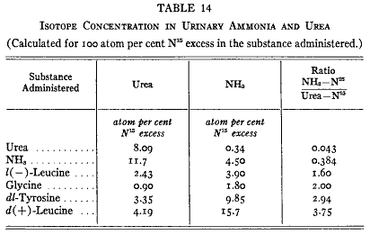
第14表
同位体尿素を食べさせると尿の尿素は再びすべての同位体を含みアンモニアは殆ど正常であった。このように尿素はアンモニア生成の重要な中間産物としては除外される。
しかし、ある種のアミノ酸をたべさせると尿のアンモニア窒素は尿素窒素よりもかなり高い同位体濃度を示した。この知見は尿のアンモニアは尿素を中間代謝物とするのではなくアミノ酸の直接な脱アミノで生ずることを強く示唆している。これまで調べた全てのアミノ酸はアンモニア生成にある程度の役割を果たしていることが判り、尿中アンモニアの窒素は尿中尿素と同じように食物および組織のアミノ酸に由来しているのに違いない。尿素として排泄される窒素は尿素サイクルを通らなければならないがアンモニアはタンパク質から遊離したアミノ酸のα−アミノ基に由来する。クレアチニンは正常尿にアンモニアよりも多量にそんざいする。クレアチンは筋肉にありエネルギー生産と関係して可逆的に燐酸化される。
毎日のクレアチン排泄はアンモニアおよび尿素とは違って高度に一定であり食物タンパク質の変化によってほんの少ししか影響されない。クレアチンを食べさせた後でも尿中に余分のクレアチニンが現れるのはかなり経ってからであった。このことをベネディクトはクレアチンがクレアチニンになるのは直接の過程ではなく中間産物を経過することを示していると解釈した(53)。
同位体を使った実験はこの論点を支持しなかった。同位体クレアチンを食べるとこれは体内のすべてのクレアチンと混ざった。筋肉から単離したクレアチンと内臓からのものだけでなく尿からのクレアチニンも同位体濃度は同じであった(54)。この尿クレアチニンはクレアチンから直接に作られたものに違いなく従って体クレアチンの代表的試料の無水物とみなすことができるであろう。このように筋クレアチンと尿クレアチニンは同じ起源と前駆体を持っている。
同位体クレアチンを用いてクレアチン合成の速度を知ることができる(55)。これをラットに与えてクレアチンを含まない食餌のもとにおいて尿クレアチニンの同位体を分析した。同位体クレアチンがクレアチニンの形で排泄される速度を第６図に示す。同位体濃度の毎日の低下は毎日合成されるクレアチンの量を示していて動物組織にある全クレアチンの約２パーセントに相当する。これは毎日クレアチニンとして排泄される量とほぼ同量である。30日目にクレアチン分子の半分は新しく合成されたクレアチンで置き換えられる。
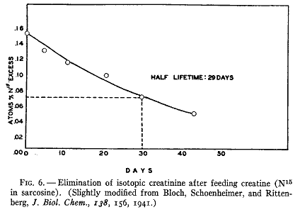
第６図
クレアチンは食事に必要なものではなく他の化合物から作らなければならない。もっとも可能性のある窒素源はタンパク質である。多くの研究室で正常動物にいろいろなタンパク質やアミノ酸を食べさせてクレアチン合成やクレアチニン排泄を増やす研究がなされた。これらすべての試みは成果を与えなかった。クレアチンのレベルは実質的に一定であった。一方ブランドその他(56)の筋ディストロフィーの患者における研究はグリシンがクレアチン合成に関わっていることを示唆した。ここでその文献をしかるべく紹介することは不可能である。ローズ(57)はアミノ酸を与えることによって細胞の生理的必要度以上にクレアチン生成を高めることはできないと述べることによってこの状態を特徴づけた。他の多くの生物反応の研究のように正常な動物を使う出納研究はクレアチン生成について何の光も与えなかった。
グアニド酢酸（グリコシアミン）を摂取させると、アミノ酸やタンパク質のばあいと違ってクレアチンまたはクレアチニンの排泄が増加した(58)。しかしグアニド酢酸は生理的なものとはみなされていて最近になってこの物質が尿や臓器で少ないが正規のものであることが見つかるまでこの重要な事実はほとんど注目されなかった。この物質は同位体を使うことによってクレアチン生成の中間産物であることが示された(59)。同位体のグアニド酢酸を食べさせるとすぐに同位体クレアチンとクレアチニンが作られた。したがってクレアチン生成は２段階からなる。（１）グアニド酢酸の生成、と（２）そのメチル化である。
メチル基は最も単純な有機化学の反応基であって生物的分解において広範な種類の有機化合物がこれを与えることができると暗黙のうちにみなされてきたようであった。デュ・ヴィニョウの研究およびボルソークの研究によってこれは事実でないことが示された。
メチル基が硫黄または窒素原子に結合している化合物で哺乳類の体内に大量に存在するのはコリンとメチオニン（両者ともに不可欠な食物成分）およびクレアチン（またはクレアチニン）である。コリンの無い食餌でラットは脂肪肝になるがコリン(60)またはメチオニン(60)を与えるとよくなるようである。デュ・ヴィニョウが示したように餌の中のメチオニンはそのメチルの無い誘導体のホモシスチンで置き換えられるがその成長促進効果は食餌中にコリンも存在するときだけである。この観察はメチル化した２種類の化合物のあいだの代謝関係の最初の実験例であり、コリンのメチル基がホモシスチンからのメチオニン合成に必要なことを示唆していて(61)動物がメチル基を作れないことを示していると解釈された。
メチル基の生化学的な転移はボルソークとダブノフ(62)の組織スライスの実験で示された。肝スライスはグアニド酢酸からゆっくりとクレアチンを生成した。しかしメチオニンを加えると反応は速く起きるようになる。このようにメチオニンはクレアチン合成においてメチル基の源になった。このような転移の決定的な証明はデュ・ヴィニョウと協同研究者(63)により与えられた。彼らはラットにメチル基の水素原子を重水素にしたメチオニンとコリンのサンプルを食べさせた。コリンを食べさせたときに単離したメチオニンとクレアチンのサンプルには同位体がふくまれた。メチオニンを食べさせるとコリンおよびクレアチンに重水素が見つかった。
これらのすべての実験の結果はクレアチン代謝をコリンおよびメチオニンの代謝に関係づけるだけでなく、これらの動物に転移可能なメチル基を作る能力の無いことを示した。コリンの重要な性質はメチル基にだけ存在し、ステッテン(24)が示したようにこの分子の他の部分はアミノエタノールまたはグリシンから作ることができるようであった。これにたいしてメチオニンは２つの必須な要素を持っていて餌から得なければならないメチル基とホモシステインを供給する。メチル基はコリンまたはメチオニンのどちらの形からも同じように摂取できる。これはアミノ基がタンパク質のアミノ酸からアミノ酸に絶えず転移するのと同じように１つの化合物から他の化合物に転移する。この生体はクレアチンに取り込まれた転移性のメチル基が尿中のクレアチニンに排泄されることによって失う。
クレアチンはそれ自身は必須の食物成分ではないが、このように食物に必須な有機化学基を含んでいる。このような基（アミノ基、アミジン基、メチル基）が絶えず転移していることの研究によって中間代謝の連続的な反応は全分子が必須であるという観点から化学基の観点によるものに導かれる。
クレアチン分子の含窒素部分は明らかにタンパク質を起源としている。クレアチン生成の多くの模式が提案された。もっとも興味あるのはフィッシャーとウィルヘルミ(64)のものである。彼らは心筋の還流によってアルギニンが前駆体であると結論した。
種々の合成した同位体化合物を正常ラットに与えて、筋のクレアチンや尿のクレアチニンに同位体が出現することによって前駆体が明らかになることを希望して、クレアチンの含窒素前駆体が探し求められた。研究した大部分のアミノ酸から標識クレアチンは殆ど作られなかったので直接の前駆体ではないことになった。しかしグリシンとアルギニンは例外であった。これらは非常に効果的だったのでクレアチンの生合成に重要な役割を果たしていたに違いなかった。この実験に使ったアルギニンは摂食した後で尿素として取り戻すことができるアミジン部分にだけ 15N が存在するように合成した（
）。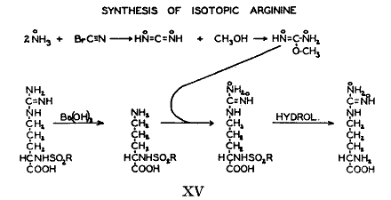
この所見そのものはクレアチン生成にさいして起きる特定の段階を確かめるものではなかった。クレアチンは３個の窒素原子を持っていてこれらのうちのどれがグリシンに関係しどれがアルギニンに関係するか決定する必要があった。
普通に行われるクレアチンの構造式（
の１）によると３個の窒素原子は結合の様式が異なり、従って異なった化学的および代謝的な機能を持つことが予想される。クレアチンのこの構造式は他のグアニド化合物と同じようにその化学的性質をすべて示してはいない。グアニド基は共鳴系であってクレアチンは極限である２と３の構造のあいだの動的な中間段階とみなすことができる状態である。クレアチンとアルギニンのアミジン基の２個の窒素原子は化学的に同じであってその起源を区別することはできない。クレアチンは３個の窒素原子を含むがはっきりとしたただ２種類の含窒素基だけからなっている。クレアチンを分解することによってアミジン部分とサルコシン（Ｎ−メチルグリシン）部分を別々に研究することができて、同位体含量によって特徴づけることができる。アルカリで処理するとクレアチンは２モルのアンモニア、１モルの二酸化炭素、および１モルのサルコシンに分解される。遊離したアンモニアはクレアチンのアミジン基に存在した窒素である。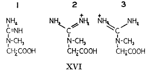
同位体グリシンを摂取したときにクレアチンから得られたアンモニアは正常であり標識窒素はサルコシンに見出される。逆に同位体アルギニンを食べさせると正常のサルコシンと同位体アンモニアが得られるクレアチンを生ずる。クレアチンのアミジン基はアルギニンのアミジン基からのものでありサルコシン部分はグリシンからのものであることは確かである。
クレアチンのメチル基および含窒素部分の起源についての事実を総合するとクレアチンの直接の生物的な前駆体が何であるかが判る。アルギニンのアミジン基はグリシンと縮合してグアニド酢酸になり、これは次にメチオニンまたはコリンによってメチル化される（
）。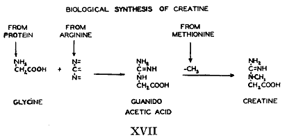
摂取したアルギニンとグリシンから生成したクレアチンの理論的な同位体量を定量的に計算すると食物中のこれらの試料だけが唯一の前駆体であり得ないことが示唆される。かなりの数の他の生物的な含窒素化合物を試験したがすべて効果が無かった（第15表）。このように失敗した最も理屈に合う説明はアルギニンとグリシンだけが実際の前駆体であり食物のタンパク質だけでなく体内のタンパク質もクレアチン生成のためにこの２つのアミノ酸を供給していることである。１つはコリンで３つはアミノ酸（アルギニン、グリシン、メチオニン）である４つの化合物が相互に作用して出来たのがクレアチンである。
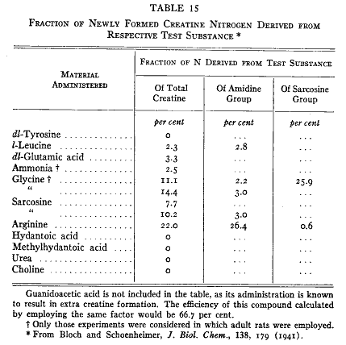
第15表
ボルソークとダブノフは組織スライスを使ってこの縮合反応を追求した(65)。彼らはアルギニンとグリシンからグアニド酢酸の合成を示した。肝臓スライスを使うとグアニド酢酸のメチル化が観察された。グアニド酢酸は腎臓のスライスだけによって合成された。これらはクレアチン合成の２つの段階が２つの違う臓器によって行われることを強く示したものであった。
クレアチンはひとたび生成すると窒素の転移にに関係する何かそれ以上の化学反応に入らない。同位体クレアチンを食べさせた後で同位体窒素はクレアチンとクレアチニンだけに見出される。さらに、アミジンとサルコシン部分の両方を同位体で標識したクレアチンを食べさせると筋クレアチンにおいても尿クレアチニンにおいても両方の部分の同位体分布の比は摂取した化合物と同じ(55)であった（第16表）。この比はアルカリ加水分解によって得られたアンモニアおよびサルコシンの同位体分析によって決定された。摂取された同位体クレアチンはまったく変化しないでそのままで排泄される。尿の尿素およびアンモニアには同位体窒素が無かった。クレアチンはひとたび作られると分解しない。
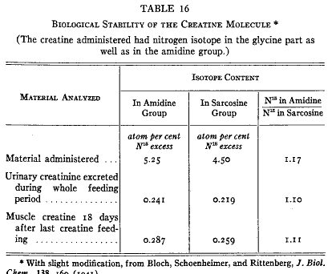
第16表
最後に論ずる窒素を含む排泄物質はプリンの誘導体の尿素である。哺乳類は窒素を主として尿素として排泄される。鳥は尿酸を排泄するので尿酸代謝の予備的な研究に適当である。
予期しているように同位体アンモニア塩をハトに与えると、ラットで同位体尿素を排泄するのと対照的に同位体尿酸を排泄する。これらの型の窒素排泄の基本的な違いはタンパク質のアルギニンの性質に示される。ラットでアルギニンはアンモニウム塩を与えると標識されるがハトでは起きない。哺乳類で尿素生成の中間産物であるアルギニンは鳥類における尿酸生成に関係が無いようである。さらに同位体尿素を与えたハトの排泄物から単離した尿酸は非常に少量の重窒素しか含まない。これらの知見は尿酸生成のひとつの段階として尿素は除外されるらしい。
他の排泄物質（尿素、クレアチン）の生成について同位体を使う実験は大きな組織分子の小さな化学グループが一時的に遊離したときに中間物質として役割を果たし、尿酸生成も同じように構造組織成分と関係するという疑いに導いた。したがって同位体アンモニアを食べさせたハトの身体を体系的に調べた(66)。
タンパク質から取り出したグルタミン酸およびアスパラギン酸はラットで実験したばあいに相当するレベルの同位元素窒素を含んでいたが、アルギニンには実際上に含んでいなかった。他方では内臓の核酸を加水分解して得たアミド窒素およびプリンは比較的に高い同位体を含んでいた。排泄した尿酸にはもっと高い水準が見つかった。核酸の窒素のあるものは摂取したアンモニアからの窒素によって急速な置き換えを受けたに違いない。これが核タンパク質および尿酸への合成における共通な段階であることを示唆している。核酸はアンモニアから尿酸への経路の上にあり、鳥類におけるすべての尿酸生成において中間産物であろう。ハトに同位体グアニンを食べさせると同位体尿酸として急速に取り除かれるが、臓器の核酸には殆ど同位体窒素が存在しなかった(66)。
アンモニアを食べさせたハトの諸臓器の核酸は臓器によってあきらかに置き換えの速度が違っている。肝臓および腸管のものは他の臓器のものに比べるとずっと急速であった。
プリンは核酸にあるだけでなく他の代謝的に活発な物質にも存在する。我々の実験室のカルカー博士は同位体アンモニアを摂取したハトの筋肉からアデノシン三リン酸（ATP）を単離した(66)。核酸のアデニンは標識されたが ATP は驚くべきことに実際上に正常であった。これは１回だけの実験であって繰り返す必要があるが、プリンへの窒素の転移はプリンが核酸分子の一部であるときだけ起きるのかも知れないことを示唆している。
これらの結果は窒素排泄で一方ではラットのタンパク質のアルギニンが果たす役割と他方ではハトのタンパク質で核酸にふくまれるプリンの役割との間にパラレリズムのあることを示している。核酸とアルギニンの両者は大きな分子の成分でありアミノ酸から遊離されるアンモニアから絶えず作られる。
哺乳類の尿素とクレアチニンおよび鳥の尿酸はすべて含窒素化合物の最終産物であり代謝反応に入らない。尿素および乳酸の直接の前駆体――すなわちアルギニンと核酸――はクレアチニンの直接の前駆体であるクレアチンと違って大きなタンパク質分子の成分である。この違いはここで報告した実験において尿素と尿酸の同位体濃度は身体から取り出した前駆体より高いのに尿内のクレアチニンはいつでも体内のクレアチンと同じであってどちらも蛋白構造に入り込むことはない。
これまでの３回の講義で述べた結果をまとめて論ずる機会が来たと思われる。
巨大で複雑な分子およびその成分である脂肪酸、アミノ酸、核酸、は絶えず迅速な化学反応に関与している。エステル、ペプチド、その他の結合は開裂する。この開裂により遊離した断片は他の大きな分子に由来する断片や腸管から吸収された断片と混じり起源を区別することができない成分からなる代謝プールの形成する。これらの遊離した分子はさらに数多くの変化を受ける。脂肪酸は脱水素されたり水素添加されたり分解されたり鎖が延長され、これによって絶えず相互に変化する。これらの脂肪酸の個々の分子は完全に分解されることもあるが、同じ化学種の個々の分子は全く異なる他の物質とくに炭水化物から絶えず形成される。遊離したアミノ酸は脱アミノされ遊離した窒素原子は他の脱アミノされた分子に移されて新しいアミノ酸を形成する。新しく作られた低分子のプールは大きな分子における空いた場所に再び入り、脂肪やタンパク質や核タンパク質を修復する。これらの再生反応に関与する小さな分子のあるものは排泄物質の生成において中間段階となる。哺乳類の窒素の一部分はアルギニンのアミジン基を経て尿素として排泄されたりグリシンに転移してグアニド酢酸やクレアチンやクレアチニンを生成する。鳥類で窒素は排泄過程においてアミジン基の形を通らずにたぶん核酸のプリン基として短時間のあいだとどまるのであろう。
動物体の諸成分は急速に特異的な分子グループに分解されこれらはある場所から他の場所に移動する。化学反応は微妙に釣り合っていて再生により体成分の総量および構造は一定である。このように一定であることは生体の構造物質が非活性であり代謝に関与していないことを示していると考えてはいけない。
急速な分子再生の所見が動物代謝についての我々の概念に関係するという考えには意見を述べなければならない。これらの反応の多くは同時に他の反応が起きることが必要である。ある成分の水素添加は他の物質からの脱水素が関連しなければならず、アミノ化の実験は多くの異なるアミノ酸がアミノ基の転移に相互作用をすることが直接に示されている。多くの観察された反応は同時に種々の異なる化合物の関与を必要とする。たとえばクレアチン生成は異なるアミノ酸の３つの有機の化学グループが縮合することによって進行する。アルギニンとメチオニンの２種類のアミノ酸はアミジン基またはメチル基を与えると失われた断片を置き換えるために他の化合物と反応しなければならない。
アミノ酸の分子的な再生のあるものはそれらが代謝サイクルに関与することで説明することができる。タンパク質のアルギニンは尿素サイクルに関与する。アミノジカルボン酸はアミノ基転移で役割を果たし、この過程に関連している対応するα−ケト酸は炭水化物のサイクルに参加する。
このような代謝サイクルはもちろん生命過程の一部であり生きているあいだに中断することはできない。したがって代謝物の絶えることのない新生を食物から同じ種類の分子を大量に供給することによって止めるのは不可能であり、多くの体内成分の再生は食物摂取と無関係に進行する。ステアリン酸またはチロシンを過剰に供給してもラットはパルミチン酸からステアリン酸を生成しフェニルアラニンからチロシンを生成する。特定の化合物は２つの役割を持っている。すなわち、一方では構造成分を置き換えるためであり他方には特定の化学反応を維持するためである。
すべての再生反応は本質的に酵素反応に違いない。脂肪やタンパク質のように大きな分子は分解酵素の影響下にあり絶えず構成している断片に分解している。これらの変化は合成過程と釣り合っていて酸化反応または脱燐酸化反応のような他の化学反応と共役している。死後になって酸化システムが消失すると合成反応もまた停止し釣り合いを無くした分解反応は熱力学的に不安定な構造成分を崩壊させる。一般的に自由エネルギーの増加を起こすすべての再生反応は他の過程と共役しなければならない。崩壊する傾向に対抗して構造を維持するためには仕事をしなければならない。壁から落ちた煉瓦を修復するにはエネルギーが必要であり生体においてエネルギー負債は化学反応によって払われる。
注意深く研究されてきた幾つかの共役した生化学反応たとえば筋収縮とか呼吸のような反応においてすべての個々の段階は他の段階と特異的に関連していることが示された。生体内に存在する複雑な有機分子の維持には非常に多くの多様な反応が絶えず起きていなければなんらない。特異的な基が常に移動していて分子の急速な再生が起きているという発見は生体系は密接に結び付けられた化学反応の１つの大きなサイクルであることを示唆している。この考えは生体が燃焼機関であるとみなす古典的な考えとも代謝に内因性および外因性の形の代謝があるとする理論とも両立することはできない。
燃焼機関の比喩は燃料が絶えず固定したシステムに流れこみ燃料が燃えて老廃物になる図式を描いている。ここに示した新しい結果は燃料だけでなく構造材料もまた流れている
生体についてのこの概念は不完全ではあるが単純な比喩として軍隊の例をあげることができる。このような隊の１つは幾つかの点で成熟した生体に似ている。その大きさは狭い範囲でのみ変化し高度に組織化された構造を持っている。他方ではこの隊を構成する個人は絶えず変化している。人員は加わり職務が代わり昇進したり降職し、いろいろな兵役期間の後に最終的には去ることになる。入るものと出るものとの人の流れは数値的に等しいが構成は変化する。入隊者は食物のようなものである。退役と死は排泄に相当する。
この比喩は生体構造の動的状態のある面だけしか語っていないので必然的に不完全である。構造単位の絶えることのない置き換えを記載してはいるがそれらの相互作用については論じていない。
生体内の生化学物質における原子の配列に関与する力についての問題は今でも実験室における研究の及ぶところではない。（終わり）
Adenosine triphosphate アデノシン三リン酸
Amino acids, indispensable 必須アミノ酸
, isotopic 同位体の
, replacement in proteins タンパク質内の置き換え
, synthesis in vivo 生体内合成
Ammonia nitrogen, introduction into proteins アンモニア窒素、タンパク質への導入
Antibodies, metabolism 抗体、代謝
Arginine, from ornithine アルギニン、オルニチンから
Aspartic acid, metabolism アスパラギン酸、代謝
Cholesterol, synthesis in vivo コレステロール、体内合成
Choline コリン
Coprosterol コプロステロール
Creatine, synthesis in vivo クレアチン、体内合成
Creatinine クレアチニン
Desaturation 不飽和化
Deuterio coprostanone 重水素コプロスタノン
Fat deposition 脂肪貯蔵
Fatty acids, biological interconversion 脂肪酸、生物的相互変化
, regeneration 再生
, synthesis in vivo 生体内合成
Glutamic acid, from ornithine グルタミン酸、オルニチンから
, metabolism
Glycine, metabolism グリシン、代謝
Guanidoacetic acid グアニド酢酸
Histidine, metabolism ヒスチジン、代謝
Hydrogenation of fatty acids 脂肪酸の水素添加
Labile deuterium 不安定重水素
Leucine, metabolism ロイシン、代謝
Linoleic acid リノール酸
Linolenic acid リノレン酸
Lysine, metabolism リシン、代謝
Methionine メチオニン
Methylation メチル化
Molecular regeneration 分子再生
Nucleic acids 核酸
Ornithine, metabolism オルニチン、代謝
Phenylalanine, metabolism フェニルアラニン
Phosphatides ホスファチド
Proline, from ornithine プロリン、オルニチンから
Proteins タンパク質
Purines プリン
Regeneration 再生
Reserve proteins 貯蔵タンパク質
Semi-labile deuterium 準不安定重水素
Serum proteins, metabolism 血漿タンパク質、代謝
Stably bound deuterium 安定結合重水素
Transamination アミノ基転移
Tyrosine, from phenylalanine チロシン、フェニルアラニンから
Urea, formation 尿素、生成
Uric acid 尿酸
1. Borsook, H., and Keighley, G. L.: The “continuing” metabolism of nitrogen in animals. Proc. Roy. Soc. (London), Series B, 118, 488 (1935).
2. Artom, C.: Sur le r le des phosphoaminolipides dans le m
le des phosphoaminolipides dans le m tabolisme des graisses. Ier mmoire: Expriences avec introduction parentrale de graisses iodes. Arch, internat. physiol., 36, 101 (1933).
tabolisme des graisses. Ier mmoire: Expriences avec introduction parentrale de graisses iodes. Arch, internat. physiol., 36, 101 (1933).
le des phosphoaminolipides dans le mtabolisme des graisses. Ier mmoire: Expriences avec introduction parentrale de graisses iodes. Arch, internat. physiol., 36, 101 (1933).Artom, C., and Peretti, G.: Sur le rle des phosphoaminolipides dans le mtabolisme des graisses. IIIer mmoire: Les lipides de la muqueuse intestinale pendant l’absorption de graisses iodes. Arch, internat. physiol., 42, 61 (1935-1936).
le des phosphoaminolipides dans le mtabolisme des graisses. IIIer mmoire: Les lipides de la muqueuse intestinale pendant l’absorption de graisses iodes. Arch, internat. physiol., 42, 61 (1935-1936).3. Urey, H. C., Brickwedde, F. G., and Murphy, G. M.: A hydrogen isotope of mass 2. Phys. Rev., 39, 164 (1932).
Urey, H. C., Brickwedde, F. G., and Murphy, G. M.: A hydrogen isotope of mass 2 and its concentration. Phys. Rev., 40, 1 (1932).
Huffman, J. R., and Urey, H. C.: Separation of oxygen isotopes by a fractionating column. Ind. Eng. Chem., 29, 531 (1937).
Urey, H. C., and Aten, A. H. W., Jr.: On the chemicak differences between nitrogen isotopes. Phys. Rev., 50, 575 (1936).
Urey, H. C., Fox, M., Huffman, J. R., and Thode, H. G.: A concentration of N15 by a chemical exchange reaction. J. Am. Chem. Soc., 59, 1407 (1937).
Thode, H. G., and Urey, H. C.: The further concentration of N15. J. Chem. Phys., 7, J4 (1939).
Thode, H. G., Gorham, J. E., and Urey, H. C.: The concentration of N15 and S34. J. Chem. Phys., 6, 296 (1938).
Roberts, I., Thode, H. G., and Urey, H. C.: The concentration of C13 by chemical exchange. J. Chem. Phys., 7, 137 (1939).
4. Hevesy, G.: The absorption and translocation of lead by plants. A contribution to the application of the method of radioactive indicators in the investigation of the change of substance in plants. Biochem. J., 17, 439 (1923).
5. Anchel, M., and Schoenheimer, R.: Deuterium as an indicator in the study of intermediary metabolism. XV. Further studies in coprosterol formation. The use of compounds containing labile deuterium for biological experiments. J. Biol. Chem., 125, 23 (1938).
6. Rittenberg, D., Schoenheimer, R., and Evans, E. A., Jr.: Deuterium as an indicator in the study of intermediary metabolism. X. The metabolism of butyric and caproic acids. J. Biol. Chem., 120, 503 (1937).
7. Schoenheimer, R., and Rittenberg, D.: Deuterium as an indicator in the study of intermediary metabolism. III. The role of the fat tissues. J. Biol. Chem., 111, 175 (1935).
8. Stetten, De W., Jr., and Schoenheimer, R.: The conversion of palmitic acid into stearic and palmitoleic acids in rats. J. Biol. Chem., 133, 329 (1940).
9. Hilditch, T. P., and Longenecker, H. E.: Further determination and characterization of the component acids of butter fat. J. Biol. Chem., 122, 497 (1937-1938).
10. Burr, G. O., and Burr, M. M.: A new deficiency disease produced by the rigid exclusion of fat from the diet. J. Biol. Chem., 82, 345 (1929).
Burr, G. O., and Burr, M. M.: On the nature and role of the fatty acids essential in nutrition. J. Biol. Chem., 86, 587 (1930).
Burr, G. O., Burr, M. M., and Miller, E. S.: On the fatty acids essential in nutrition. III. J. Biol. Chem., 97, 1 (1932).
11. Birch, T. W.: The relation between vitamin B6 and the unsaturated fatty acid factor. J. Biol. Chem., 124, 775 (1938).
Turpeinen, O.: Further studies on the unsaturated fatty acids essential in nutrition. J. Nutrition, 15, 351 (1938).
12. Schoenheimer, R., and Rittenberg, D.: Deuterium as an indicator in the study of intermediary metabolism. IX. The conversion of stearic acid into palmitic acid in the organism. J. Biol. Chem., 120, 155 (1937).
13. Rittenberg, D., and Schoenheimer, R.: Deuterium as an indicator in the study of intermediary metabolism. VIII. Hydrogenation of fatty acids in the animal organism. J. Biol. Chem., 117, 485 (1937).
14. Krogh, A., and Ussing, H. H.: The exchange of hydrogen between the free water and the organic substances in the living organism. Skand. Arch. Physiol., 75, 90 (1936-1937).
15. Schoenheimer, R., and Rittenberg, D.: Deuterium as an indicator in the study of intermediary metabolism. VI. Synthesis and destruction of fatty acids in the organism. J. Biol. Chem., 114, 381 (1936).
16. Bernhard, K., and Schoenheimer, R.: The inertia of highly unsaturated fatty acids in the animal, investigated with deuterium. J. Biol. Chem., 133, 707 (1940).
17. Rittenberg, D., and Schoenheimer, R.: Deuterium as an indicator in the study of intermediary metabolism. XI. Further studies on the biological uptake of deuterium into organic substances, with special reference to fat and cholesterol formation. J. Biol. Chem., 121, 235 (1937).
18. Bernhard, K., and Schoenheimer, R.: The rate of formation of stearic and palmitic acids in normal mice. J. Biol. Chem., 133, 713 (1940).
19. Cavanagh, B., and Raper, H. S.: Deuterium as an indicator in fat metabolism. Nature, 137, 233 (1936).
Cavanagh, B., and Raper, H. S.: A study of the passage of fatty acids of food into lipins and glycerides of the body using deuterium as an indicator. Biochem. J., 331, 17 (1939).
20. Hevesy, G., and Hahn, L.: Turnover of lecithin, cephalin and sphingomyelin. K. Danske Videnskab. Selskab., Biol. Medd., 15, No. 5 (1940).
21. Artom, C,, Sarzana, G., Perrier, C., Santangelo, M., and Segre, E.: Rate of “organification” of phosphorus in animal tissues. Nature, 139, 836 (1937).
Artom, C., Sarzana, G., Perrier, C., Santangelo, M., and Segre, E.: Phospholipid synthesis during fat absorption. Nature, 139, 1105 (1937).
22. Perlman, I., Ruben, S., and Chaikoff, I. L.: Radioactive phosphorus as an indicator of phospholipid metabolism. I. The rate of formation and destruction of phospholipids in the fasting rat. J. Biol. Chem., 122, 169 (1937-1938).
Fries, B. A., Ruben, S., Perlman, I., and Chaikoff, I. L.: Radioactive phosphorus as an indicator of phospholipid metabolism. II. The role of the stomach, small intestine, and large intestine in phospholipid metabolism in the presence and absence of ingested fat. J. Biol. Chem., 123, 587 (1938).
23. Chargaff, E.: Unstable isotopes. II. The relative speed of formation of lecithin and cephalin in the body. J. Biol. Chem., 128, 587 (1939).
24. Stetten, De W., Jr.: Biological relationships of choline, ethanolamine, and related compounds. J. Biol. Chem., 140, 143 (1940).
25. Schoenheimer, R., Ratner, S., and Rittenberg, D.: Studies in protein metabolism. X. The metabolic activity of body pro- teins investigated with l(-)-leucine containing two isotopes. J. Biol. Chem., 130, 703 (1939).
26. Ratner, S., Rittenberg, D., Keston, A. S., and Schoenheimer, R.: Studies in protein metabolism. XIV. The chemical interaction of dietary glycine and body proteins in rats. J. Biol. Chem., 134, 665 (1940).
27. Schoenheimer, R., Ratner, S., and Rittenberg, D.: Studies in protein metabolism. VII. The metabolism of tyrosine. J. Biol. Chem., 127, 333 (1939).
28. Weissman, N., and Schoenheimer, R.: The relative stability of l(+)-lysine in rats studied with deuterium and heavy nitrogen. J. Biol. Chem., 140, 779 (1941).
29. Knoop, F., and Oesterlin, H.:  ber die nati
ber die nati rliche Synthese der Aminos
rliche Synthese der Aminos uren und ihre experimentelle Reproduktion. Z. physiol. Chem., 148, 294 (1925).
uren und ihre experimentelle Reproduktion. Z. physiol. Chem., 148, 294 (1925).
ber die natirliche Synthese der Aminosuren und ihre experimentelle Reproduktion. Z. physiol. Chem., 148, 294 (1925).30. von Euler, H., Adler, E., Gunther, G., and Das, N. B.: Uber den enzymatischen Abbau und Aufbau der Glutaminsure. II. In tierischen Geweben. Z. physiol. Chem., 254, 61 (1938).
ure. II. In tierischen Geweben. Z. physiol. Chem., 254, 61 (1938).31. Herbst, R. M., and Engel, L. L.: A reaction between α-ketonic acids and α-amino acids. J. Biol. Chem., 107, 505 (1934).
Herbst, R. M.: The reaction between α-ketonic acids and α-amino acids. J. Am. Chem. Soc., 58, 2239 (1936).
32. Braunstein, A. E., and Kritzmann, M. G.: ber den Ab- und Aufbau von Aminosuren durch Umaminierung. Enzymologia, 2, 129 (1937).
ber den Ab- und Aufbau von Aminosuren durch Umaminierung. Enzymologia, 2, 129 (1937).Braunstein, A. E.: Die enzymatische Umaminierung der Aminosuren und ihre physiologische Bedeutung. Enzymologia, 7, 25 (1939).
uren und ihre physiologische Bedeutung. Enzymologia, 7, 25 (1939).33. Cohen, P. P.: Transamination with purified enzyme preparations (transaminase). J. Biol. Chem., 136, 565 (1940).
34. Foster, G. L., Schoenheimer, R., and Rittenberg, D.: Studies in protein metabolism. V. The utilization of ammonia for amino acid and creatine formation in animals. J. Biol. Chem., 127,319 (1939).
35. Mitchell, H. H., and Hamilton, T. S.: The Biochemistry of the Amino Acids. American Chemical Society Monograph Series. The Chemical Catalog Company, Inc., New York, p. 571 (1929).
36. Burroughs, E. W., Burroughs, H. S., and Mitchell, H. H.: The independence of the endogenous and the exogenous metabolism of nitrogen. J. Nutrition, 19, 271 (1940).
37. Luck, J. M.: Liver proteins. I. The question of protein storage. J. Biol. Chem., 115, 491 (1936).
Luck, J. M.: The liver proteins. Perspectives in Biochemistry. Edited by J. Needham and D. E. Green. Cambridge University Press, Cambridge, England, p. 215 (1937).
38. Heidelberger, M., and Kendall, F. E.: A quantitative study of the precipitin reaction between type III pneumococcus polysaccharide and purified homologous antibody. J. Exp. Med., 50, 809 (1929).
Heidelberger, M.: Quantitative absolute methods in the study of antigen-antibody reactions. Bact. Rev., 3, 49 (1939).
39. Madden, S. C., and Whipple, G. H.: Plasma proteins: their source, production and utilization. Physiol. Rev., 20, 194 (1940).
40. Rose, W. C.: The nutritive significance of the amino acids. Physiol. Rev., 18, 109 (1938).
41. Schoenheimer, R., Rittenberg, D., and Keston, A. S.: Studies in protein metabolism. VIII. The activity of the α-amino group of histidine in animals. J. Biol. Chem., 127, 385 (1939).
42. Jackson, R. W., and Chandler, J. P.: Metabolism of proteins and amino acids. Annual Review of Biochemistry, 8, 249. Edited by J. M. Luck. Annual Reviews, Inc., Stanford University P.O., California (1939).
43. Clutton, R. F., Schoenheimer, R., and Rittenberg, D.: Studies in protein metabolism. XII. The conversion of ornithine into arginine in the mouse. J. Biol. Chem., 132, 227 (1940).
44. Roloff, M., Ratner, S., and Schoenheimer, R.: The biological conversion of ornithine into proline and glutamic acid. J. Biol. Chem., 136, 561 (1940).
45. Moss, A. R., and Schoenheimer, R.: The conversion of phenylalanine to tyrosine in normal rats. J. Biol. Chem., 135, 415 (1940).
Moss, A. R.: The conversion of β-phenyllactic acid to tyrosine in normal rats. J. Biol. Chem., 137, 739 (1941).
46. Rittenberg, D., Keston, A. S., Schoenheimer, R., and Foster, G. L.: Deuterium as an indicator in the study of intermediary metabolism. XIII. The stability of hydrogen in amino acids. J. Biol. Chem., 125, 1 (1938).
47. Foster, G. L., Rittenberg, D., and Schoenheimer, R.: Deuterium as an indicator in the study of intermediary metabolism. XIV. Biological formation of deuteroamino acids. J. Biol. Chem., 125, 13 (1938).
48. Bollman, J. L., Mann, F. C., and Magath, T. B.: Studies on the physiology of the liver. VIII. Effect of total removal of the liver on the formation of urea. Am. J. Physiol., 69, 371 (1924).
49. Krebs, H. A., and Henseleit, K.: Untersuchungen ber die Harnstoffbildung im Tierk rper. Z. physiol. Chem., 210, 33 (1932).
rper. Z. physiol. Chem., 210, 33 (1932).
ber die Harnstoffbildung im Tierkrper. Z. physiol. Chem., 210, 33 (1932).50. Evans, E. A., Jr., and Slotin, L.: The role of carbon dioxide in the synthesis of urea in rat liver slices. J. Biol. Chem., 136, 805 (1940).
51. Rittenberg, D., and Waelsch, H.: The source of carbon for urea formation. J. Biol. Chem., 136, 799 (1940).
52. Krebs, H. A.: Untersuchungen ber den Stoffwechsel der Aminosuren im Tierkrper. Z. physiol. Chem., 217, 191 (1933).
ber den Stoffwechsel der Aminosuren im Tierkrper. Z. physiol. Chem., 217, 191 (1933).Krebs, H. A.: Weitere Untersuchungen ber den Abbau der Aminosuren im Tierkrper. Z. physiol. Chem., 218, 157 (1933).
ber den Abbau der Aminosuren im Tierkrper. Z. physiol. Chem., 218, 157 (1933).53. Benedict, S. R., and Osterberg, E.: Studies in creatine and creatinine metabolism. V. The metabolism of creatine. J. Biol. Chem., 56, 229 (1923).
54. Bloch, K., and Schoenheimer, R.: Studies in protein metabolism. XI. The metabolic relation of creatine and creatinine studied with isotopic nitrogen. J. Biol. Chem., 131, 111 (1939).
55. Bloch, K., Schoenheimer, R., and Rittenberg, D.: Rate of formation and disappearance of body creatine in normal animals. J. Biol. Chem., 138, 155 (1941).
56. Brand, E., Harris, M. M., Sandberg, M., and Ringer, A. I.: Studies on the origin of creatine. Am. J. Physiol., 90, 296 (1929).
57. Rose, W. C.: The metabolism of creatine and creatinine. Annual Review of Biochemistry, 4, 243. Edited by J. M. Luck. Annual Reviews, Inc., Stanford University P.O., California (1935),
58. Weber, C. J.: Studies on the metabolism of guanidoacetic acid. Proc. Am. Soc. Biol. Chem., J. Biol. Chem., 114, cvii (1936).
Bodansky, M.: Comparison of glycine and guanidoacetic acid as precursors of creatine. J. Biol. Chem., 115, 641 (1936).
59. Bloch, K., and Schoenheimer, R.: The biological precursors of creatine. J. Biol. Chem., 138, 167 (1941).
60. Best, C. H., and Ridout, J. H.: Choline as a dietary factor. Annual Review of Biochemistry, 8, 349. Edited by J. M. Luck. Annual Reviews, Inc., Stanford University P.O., California (1939).
61. Du Vigneaud, V., Chandler, J. P., Moyer, A. W., and Keppel, D. M.: The effect of choline on the ability of homocystine to replace methionine in the diet. J. Biol. Chem., 131, 57 (1939).
62. Borsook, H., and Dubnoff, J. W.: The formation of creatine from glycocyamine in the liver.. J. Biol. Chem., 132, 559 (1940).
63. Du Vigneaud, V., Cohn, M., Chandler, J. P., Schenck, J. R., and Simmonds, S.: The utilization of the methyl group of methionine in the biological synthesis of choline and creatine. J. Biol. Chem., 140, 625 (1941).
64. Fisher, R. B., and Wilhelmi, A. E.: The metabolism of creatine. II. The conversion of arginine into creatine in the isolated rabbit heart. Biochem. J., 312, 1136 (1937).
Davenport, H. W., Fisher, R. B., and Wilhelmi, A. E.: The metabolism of creatine. III. The role of glycocyamine in creatine synthesis. Biochem. J., 321, 262 (1938).
65. Borsook, H., and Dubnoff, J. W.: The formation of glycocyamine in animal tissues. J. Biol. Chem., 138, 389 (1941).
66. Unpublished data.
I. ANALYSIS OF DEUTERIUM IN ORGANIC COMPOUNDS
1. Rittenberg, D., and Schoenheimer, R.: Deuterium as an indicator in the study of intermediary metabolism. II. Methods. J. Biol. Chem., 111, 169 (1935).
2. Keston, A. S., Rittenberg, D., and Schoenheimer, R.: Determination of deuterium in organic compounds. J. Biol. Chem., 122, 227 (1937-1938).
II. STABILITY AND EXCHANGEABILITY OF DEUTERIUM IN ORGANIC LINKAGE
1. Schoenheimer, R., and Rittenberg, D.: Deuterium as an indicator in the study of intermediary metabolism. I. J. Biol. Chem., 111, 163 (1935).
2. Rittenberg, D., Keston, A. S. Schoenheimer, R., and Foster, G. L.: Deuterium as an indicator in the study of intermediary metabolism. XIII. The stability of hydrogen in amino acids. J. Biol. Chem., 125, 1 (1938).
3. Ratner, S., Rittenberg, D., and Schoenheimer, R.: The stability of hydrogen-carbon linkages in glutamic acid. J. Biol. Chem., 135, 357 (1940).
4. Foster, G. L., Keston, A. S., Rittenberg, D., and Schoenheimer, R.: Deuterium as an indicator in the study of intermediary metabolism. XII. The action of proteolytic enzymes on peptides in heavy water. J. Biol. Chem., 124, 159 (1938).
5. van Heyningen, W. E., Rittenberg, D., and Schoenheimer, R.: The preparation of fatty acids containing deuterium. J. Biol. Chem., 125, 495 (1938).
I. NATURAL ABUNDANCE OF N15 IN AMINO ACIDS AND PROTEINS
1. Schoenheimer, R., and Rittenberg, D.: Studies in protein metabolism. I. General considerations in the application of isotopes to the study of protein metabolism. The normal abundance of nitrogen isotopes in amino acids, J. Biol. Chem., 127, 285 (1939).
II. ANALYSIS OF ISOTOPIC NITROGEN IN ORGANIC COMPOUNDS
1. Rittenberg, D., Keston, A. S., Rosebury, F., and Schoenheimer, R.: Studies in protein metabolism. II. The determination of nitrogen isotopes in organic compounds. J. Biol. Chem., 127, 291 (1939).
III. SYNTHESIS OF AMINO ACIDS CONTAINING ISOTOPIC NITROGEN
1. Schoenheimer, R., and Ratner, S.: Studies in protein metabolism. III. Synthesis of amino acids containing isotopic nitrogen. J. Biol. Chem., 127, 301 (1939).
IV. STABILITY OF NITROGEN IN ORGANIC COMPOUNDS
1. Keston, A. S., Rittenberg, D., and Schoenheimer, R.: Studies in protein metabolism. IV. The stability of nitrogen in organic compounds. J. Biol. Chem., 127, 315 (1939).
V. PHYSIOLOGICAL INVERSION OF AMINO ACIDS
1. Du Vigneaud, V., Cohn, M., Brown, G. B., Irish, O. J., Schoenheimer, R., and Rittenberg, D.: A study of the inversion of d-phenylaminobutyric acid and the acetylation of l-phenylaminobutyric acid by means of the isotopes of nitrogen and hydrogen. J. Biol. Chem., 131, 273 (1939).
2. Ratner, S., Schoenheimer, R., and Rittenberg, D.: Studies in protein metabolism. XIII. The metabolism and inversion of d(+)-leucine studied with two isotopes. J. Biol. Chem., 134, 653 (1940).
1. Schoenheimer, R.: The investigation of intermediary metabolism with the aid of heavy nitrogen. The Harvey Lectures, 1936-1937, Series XXXII, p. 122. The Williams & Wilkins Company, Baltimore (1937).
2. Schoenheimer, R., and Rittenberg, D.: The study of intermediary metabolism of animals with the aid of isotopes. Physiol. Rev., 20, 218 (1940).
1. Rittenberg, D., and Foster, G. L.: A new procedure for quantitative analysis by isotope dilution, with application to the determination of amino acids and fatty acids. J. Biol. Chem., 133, 737 (1940).
2. Graff, S., Rittenberg, D., and Foster, G. L.: The glutamic acid of malignant tumors. J. Biol. Chem., 133, 745 (1940).
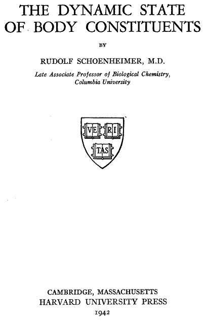
表紙